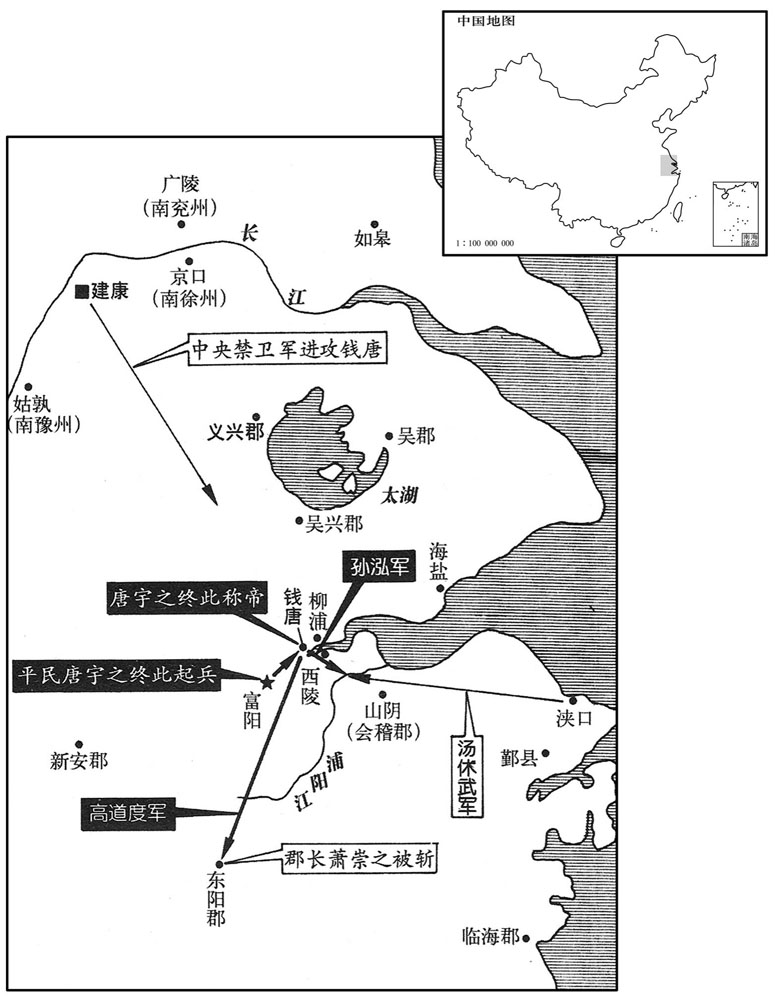
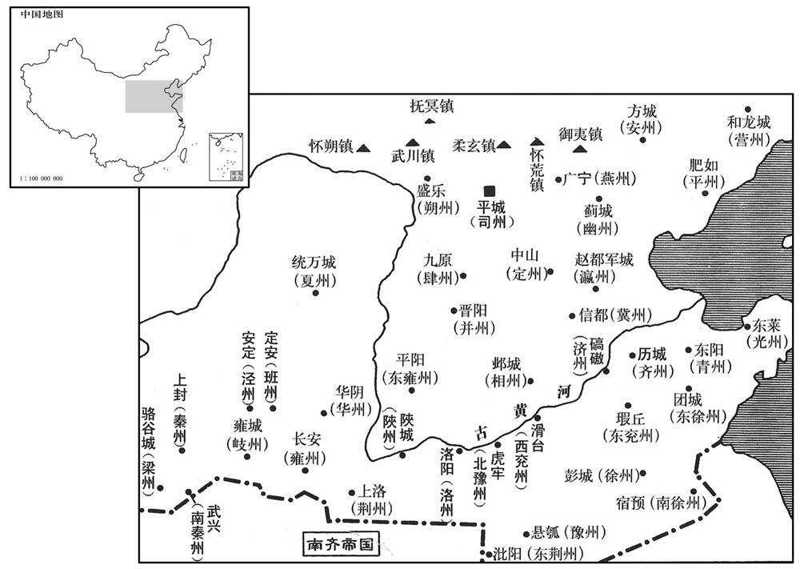
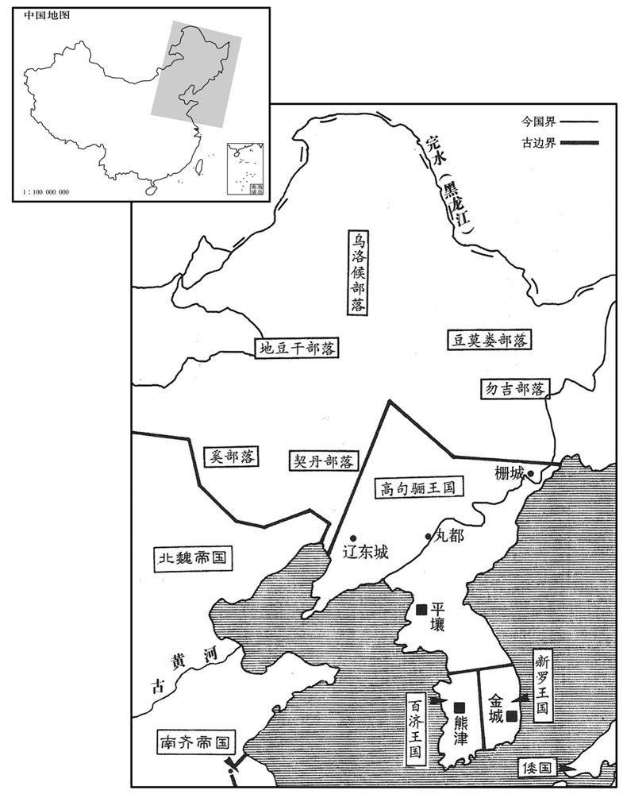
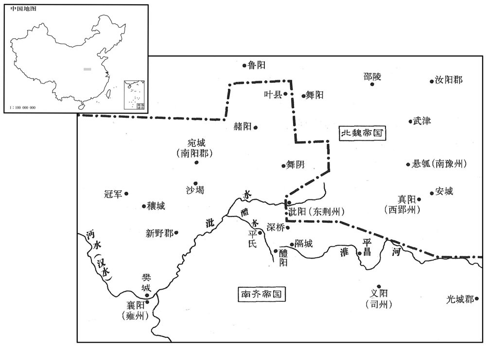

卷次与人物目录 / 卷136
资治通鉴 · 卷第一百三十六【齐纪二】
公元484年至公元489年 · 原文、白话与胡三省注
本页按胡注本编排保存全卷内容。白话采用本站所据译本，未可靠对应的内容另列说明；事件标题用于定位，并非原书文字。
本卷共131段原文，126段有译文对应，5段缺译或待核对。
卷第一百三十六【齐纪二】起阏逢困敦（甲子），尽屠维大荒落（己巳），凡六年。
卷首原文与注释
世祖武皇帝上之下
公元484年 · 齐世祖武皇帝永明二年
永明二年〔（甲子﹑四八四）〕
上传原文的注释括号有异常，字符原样保留；无法可靠划分的段落默认全文显示。
本年事件索引（现代整理）
春，正月，乙亥，以后将军柳世隆为尚书右仆射；竟陵王子良为护军将军兼司徒，领兵置佐，镇西州。子良少有清尚，〔少，诗照翻。〕倾意宾客，才隽之士，皆游集其门。开西邸，〔据子良传；西邸在鸡笼山。〕多聚古人器服以充之。记室参军范云﹑萧琛﹑乐安任昉﹑法曹参军王融﹑卫军东合祭酒萧衍﹑〔记室参军，掌书记；法曹参军，掌刑法。此皆子良府属也。时王俭为卫将军，辟萧衍为东合祭酒。自晋以来，公府属，长史之下有东﹑西合祭酒。琛，丑林翻。任，音壬。昉，孚往翻。〕镇西功曹谢朓﹑〔朓，土了翻。〕步兵校尉沈约﹑扬州秀才吴郡陆倕，〔校，户教翻。倕，是为翻。〕并以文学，尤见亲待，号曰八友。法曹参军柳恽，〔恽，于粉翻。〕太学博士王僧孺﹑〔晋武帝置太学博士﹑太常博士﹑国子博士。〕南徐州秀才济阳江革﹑〔革，南徐州所举秀才也。济阳郡时属南徐州。济，子礼翻。〕尚书殿中郎范缜﹑〔魏﹑晋以来，尚书诸曹，殿中郎为诸曹之首。缜，章忍翻。〕会稽孔休源亦预焉。〔会，工外翻。〕琛，惠开之从子；萧惠开见一百三十一卷宋明帝泰始元年﹑二年。从，才用翻；下同。恽，元景之从孙；融，僧达之孙；〔柳元景以武功显于宋文﹑武二朝。王僧达以世资才俊进。〕衍，顺之之子；〔萧顺之，太祖族弟。〕朓，述之孙；约，璞之子；僧孺，雅之曾孙；〔谢述见一百二十三卷未文帝元嘉十七元。沈璞守盱胎有功；元嘉二十七年，孝武孝建之初，以不迎义师戮。王雅见一百七卷晋孝武太元十五年。〕缜，云之从兄也。〔缜，章忍翻。〕
春季，正月，乙亥（初二），南齐朝廷任命后将军柳世隆为尚书右仆射；竟陵王萧子良为护军将军兼司徒，统领军队，设置辅佐官员，镇守西州。萧子良很小就有清高的品格，他喜欢结交朋友，有才能的士大夫都聚集在他的门下。萧子良建造他西郊的住宅，将聚集起来的许多古代器物、服饰放在里面。记室参军范云、萧琛、乐安人任、法曹参军王融、卫军东阁祭酒萧衍、镇西功曹谢眺、步兵校尉沈约和扬州秀才吴郡人陆等，都在辞章修养上很有造诣，尤其受到萧子良的厚待，号称八友。另外，法曹参军柳恽、太学博士王僧孺、南徐州秀才济阳人江革、尚书殿中郎范缜和会稽人孔休源，也都是萧子良的朋友。萧琛是萧惠开的侄子。柳恽是柳元景的侄孙。王融是王僧达的孙子。萧衍是萧顺之的儿子。谢眺是谢述的孙子。沈约是沈璞的儿子。王僧孺是王雅的曾孙。范缜是范云的堂兄。
子良笃好释氏，招致名僧，讲论佛法，道俗之盛，江左未有。或亲为众僧赋食﹑行水，〔好，呼到翻。于伪翻。赋，分畀也。〕世颇以为失宰相体。
萧子良笃信佛教，他延请许多高僧讲论佛法，佛教之盛行，在江左一带还从来没有过。有时，萧子良还亲自给和尚们端饭送水，世间都认为他有失宰相体统。
范缜盛称无佛。子良曰：「君不信因果，〔释氏有因缘果报之说。〕何得有富贵﹑贫贱﹖」缜曰：「人生如树花同发，随风而散；或拂帘幌坠茵席之上，〔幌，呼广翻。〕或关篱墙落粪溷之中。坠茵席者，殿下是也；落粪溷者，下官是也。贵贱虽复殊途，〔复，扶又翻。〕因果竟在何处！」子良无以难。〔难，乃旦翻；下难之同。〕缜又着神灭论，以为：「形者神之质，神者形之用也。神之于形，犹利之于刀；未闻刀没而利存，岂容形亡而神在哉！」此论出，朝野諠哗，难之终不能屈。〔朝，直遥翻。〕太原王琰着论讥缜曰：「呜呼范子！曾不知其先祖神灵所在！」欲以杜缜后对。缜对曰：「呜呼王子！知其先祖神灵所在而不能杀身以从之！」子良使王融谓之曰：「以卿才美，何患不至中书郎；；而故乖剌为此论，〔中书郎，即谓中书侍郎也。剌，来葛翻。〕甚可惜也！宜急毁弃之。」缜大笑曰：「使范缜卖论取官，已至令﹑仆矣，〔令﹑仆，谓尚书令及两仆射。〕何但中书郎邪！」
范缜大谈世上没有佛。萧子良说：“如果你不相信困果报应，那么，为什么世上会有贫贱、富贵之分？”范缜说：“人生在世，就像树上的花朵一样，同时生长又都随风飘散，有的掠过竹帘帷幕落到了床褥上，有的越过篱笆围墙落在了粪坑里。落到床褥之上的好比是殿下您，落到粪坑里的就是我了。虽然我们之间贵贱迥异，但因果报应究竟在何处呢？”萧子良听后，无言以对。范缜又写了《神灭论》，他认为：“形体，是精神的本质；精神则是形体的表现和产物。精神对于形体来说，就好像锋刃与刀，从未听说过有刀失而刃在的道理，那么，怎么会有形体消亡了而精神却还存在的事情呢？”这一理论一提出，朝廷上下一片哗然，屡加诘难，最终也没能使范缜屈服。太原人王琰，写文章讥讽范缜说：“呜呼范子！竟然不知道他祖先的神灵在什么地方！”王琰想以此堵住范缜的嘴。范缜却回答他说：“呜呼王子！知道他祖先的神灵在什么地方，却不肯杀身随之同去！”萧子良派王融劝范缜说：“凭着你这样的才华，还愁什么当不上中书郎，却故意发表这种荒谬偏激的言论，实在是令人太遗憾了。你应该赶快毁掉并放弃这些文章。”范缜一听，大笑说：“假使让我范缜出卖我的理论，去换取官职，那么，我早已做到尚书令、仆射了，何止是一个中书郎！”
萧衍好筹略，有文武才干，王俭深器异之，曰：“萧郎出三十，贵不可言。”萧衍做事喜欢运筹谋略。他文武全才，王俭非常器重他，对他的才能惊异不止。王俭曾说：“萧郎刚刚年过三十，实在是贵不可言啊！”
萧衍好筹略，有文武才干，〔好，呼到翻。〕王俭深器异之，曰：「萧郎出三十，贵不可言。」〔萧衍事始此。〕
本段缺少可靠对应白话，原文完整保留；未使用生成译文。
壬寅，以柳世隆为尚书左仆射，丹杨尹李安民为右仆射，王俭领丹杨尹。
壬寅（二十九日），南齐朝廷任命柳世隆为尚书左仆射，任命丹杨尹李安民为右仆射，任命王俭兼领丹杨尹。
夏，四月，甲寅，魏主如方山；戊午，还宫；庚申，如鸿池；〔鸿池即旋鸿池也。水经注：凉城郡旋鸿县东山下，水积成池，东西二里，南北四里。又太祖天兴二年，穿鸿鴈池于平城。〕丁卯，还宫。
夏季，四月，甲寅（十二日），北魏孝文帝前往方山；戊午（十六日），返回宫中。庚申（十八日），又前往鸿池，丁卯（二十五日），返回宫中。
五月，甲申，魏遣员外散骑常侍李彪等来聘。〔散，悉亶翻。骑，奇寄翻。〕
五月，甲申（十二日），北魏派员外散骑常侍李彪等来访。
六月，壬寅朔，中书舍人吴兴茹法亮封望蔡男。〔康曰：茹，人诸切，姓也。望蔡县属豫章郡。沈约曰：汉灵帝中平中，汝南上蔡民分徙此城立县，名曰上蔡，晋武帝太康元年，更名望蔡。宋白曰：望蔡县本汉建成县，灵帝分置上蔡县，晋武帝上蔡人思本土，改为望蔡，今为高安县，瑞州治所。〕时中书舍人四人，各住一省，谓之「四户」，以法亮及临海吕文显等为之；既总重权，势倾朝廷，守宰数迁换去来，四方饷遗，岁数百万。法亮尝于众中语人曰：「何须求外禄！此一户中，年办百万。」盖约言之也。〔数，所角翻。遗，于季翻。语，牛倨翻。李延寿曰：中书所司，掌在机务。汉元以令、仆用事，魏明以监、令专权。至宋孝武以来，士庶杂选，及明帝世，胡母颢、阮佃夫之徒，专为佞幸矣。齐初亦用久劳及以亲信关谳表启，发署诏敕，颇涉辞翰，亦为诏文，侍郎之局复见侵矣。建武诏命，始不关中书，专出舍人。省内舍人四人，所直四省。据此，四户，则舍人分住四省，自法亮等始。〕后因天文有变，王俭极言「文显等专权徇私，上天见异，祸由四户。」〔见，贤遍翻。〕上手诏酬答，而不能改也。
六月，壬寅朔（初一），南齐中书舍人吴兴人茹法亮，被封为望蔡男。此时共有四位中书舍人，被分别派驻各省，称为四户，分别由茹法亮和临海人吕文显等人担任。他们总揽大权，声势超过了朝廷其他文武官员，地方官不断来去调换，四面八方给他们送的礼物，一年就达几百万之多。茹法亮曾经当众对人说：“何必一定要求得外任官的俸禄。就在这一户里，一年就可弄到一百万。”他所说的一百万也不过是个大概的数目。后来，天象星辰发生了变化，王俭坚决认为：“吕文显等人专断独行，徇私舞弊。所以，苍天出现异变，这一灾难出自四户。”南齐武帝亲自写诏酬答王俭，却不能改变这种现状。
魏旧制：户调帛二匹，絮二斤，丝一斤，谷二十斛；又入帛一匹二丈，委之州库，以供调外之费；所谓各随土之所出。丁卯，诏曰：「置官班禄，行之尚矣；自中原丧乱，兹制中绝。朕宪章旧典，始班俸禄。户增调帛三匹，谷二斛九斗，以为官司之禄；增调外帛二匹。禄行之后，赃满一匹者死。变法改度，宜为更始，〔调，徒吊翻。俸，扶用翻。更，工衡翻。〕其大赦天下。」
北魏旧制规定：每年户调为二匹布帛，二斤棉絮，一斤丝，二十斛谷米。另外，又增缴一匹二丈的布帛，存入本州州库，用来供应户调的需要。各州所征调的物品，可以按照本地所出产的缴纳。丁卯（二十六日），孝文帝下诏说：“设置官吏，发放俸禄，很早就已开始实行，自从中原战乱，这一制度才开始中断。朕依照旧有的典章制度，开始颁赐官吏们的俸禄。所以，每户户调应增缴三匹帛，二斛九斗谷米，作为官员们的棒禄。再增收二匹户调以外的帛。俸禄制度实行以后，贪赃达一匹布帛的处死，改变法令制度，应该作为新的开始，为此下令实行大赦。”
秋，七月，甲申，立皇子子伦为巴陵王。
秋季，七月，甲申（十三日），立皇子萧子伦为巴陵王。
乙未，魏主如武州山石窟寺。
乙未（二十四日），北魏国主孝文帝前往武州山石窟寺。
九月，魏诏，班禄以十月为始，季别受之。〔三月为一季。〕旧律，枉法十匹，义赃二十匹，罪死；至是，义赃一匹，枉法无多少，皆死。〔枉法，谓受赇枉法而出入人罪者。义赃，谓人私情相馈遗，虽非乞取，亦计所受论赃。〕仍分命使者，纠按守宰之贪者。
九月，北魏下诏，官员们的俸禄制度，从本年十月开始实行，每个季度发放一次。以前的法律规定，贪污十匹布帛，受贿二十匹布帛的人，一律处以死刑。到现在，凡是受贿一匹布帛的，以及贪污无论多少，都处以死刑。朝廷仍然分别派出检查官，到各地巡视纠举有贪污行为的地方官。
秦、益二州刺史恒农李洪之以外戚贵显，〔魏显祖、高祖皆李氏出也。魏避显祖讳，改弘农为恒农。〕为治贪暴，〔治，直吏翻。〕班禄之后，洪之首以赃败。魏主命锁赴平城，集百官亲临数之；〔数，所具翻，数其罪也。〕犹以其大臣，听在家自裁。自余守宰坐赃死者四十余人。受禄者无不局蹐，〔局，音局。蹐，音脊。〕赇赂殆绝。然吏民犯他罪者，魏主率宽之，疑罪奏谳多减死徙边，岁以千计。都下决大辟，岁不过五六人；州镇亦简。〔谳，鱼列翻，又鱼蹇翻。〕
秦、益二州刺史恒农人李洪之自恃皇亲国戚，身分显贵，为官残暴，贪赃枉法。实行俸禄制度后，李洪之因贪污事露，第一个就被揭发出来。孝文帝下崐令给李洪之上戴上手铐脚镣，押赴平城；然后，召集文武百官，亲自历数他的罪状。由于他是朝廷大臣，允许他在家里自杀。其余有贪污受贿罪的地方官大约有四十多人，也全都处以死刑。那些接受过贿赂的人，无不恐慌害怕，行贿受贿的事，几乎被杜绝了。然而，官吏和老百姓犯了其他罪时，孝文帝大都宽大处理。对缺少确凿证据的罪犯上报审核，多半免除死刑而流放到边疆，这种情况，每年都数以千计。由朝中法司判处死刑的，一年也超不过五六个人，州郡、边镇就更少了。
久之，淮南王佗〔【张：「佗」作「陀」。】〕奏请依旧断禄，〔辟，毗亦翻。断，丁管翻。〕文明太后召群臣议之。中书监高闾以为：「饥寒切身，慈母不能保其子。今给禄，则廉者足以无滥，贪者足以劝慕；不给，则贪者得肆其奸，廉者不能自保。淮南之议，不亦谬乎！」诏从闾议。
很久以后，淮南王拓跋佗奏请仍按旧制，停止向官员发放俸禄。太皇太后冯氏召集文武百官讨论这件事。中书监高闾认为：“自身深感饥寒交迫，慈母却不能保护她的孩子。如今，发放俸禄，廉洁的官吏更加清白而对于那些贪官污吏也足以改过为善。停止发放俸禄，贪官污吏会更加肆无忌惮地贪赃枉法，廉洁的人却不能维持生计。淮南王的建议，岂不是荒唐吗？”朝廷颁诏采纳高闾的建议。
闾又上表，以为：「北狄悍愚，同于禽兽。〔悍，侯旰翻，又下罕翻。〕所长者野战，所短者攻城。〔北狄，指蠕蠕也。〕若以狄以所短夺其所长，则虽众不能成患，虽来不能深入。又，狄散居野泽，随逐水草，战则与家业并至，奔则与畜牧俱逃，不赍资粮而饮食自足，是以历代能为边患。六镇势分，倍众不鬬，〔谓敌人众力加倍，则镇人不敢鬬也。〕互相围逼，难以制之。请依秦、汉故事，于六镇之北筑长城，〔魏世祖破蠕蠕，列置降人于漠南，东至濡源，西暨五原阴山，竟三千里，分为六镇，今武川、抚冥、怀朔、怀荒、柔玄、御夷也。下云六镇东西不过千里，则当自代都北塞而东至濡源耳。杜佑曰：后魏六镇并在马邑、云中、单于府界。〕择要害之地，往往开门，造小城于其侧，置兵扞守。狄既不攻城，野掠无获，草尽则走，终必惩艾。计六镇东西不过千里，一夫一月之功可城三步之地，强弱相兼，不过用十万人，一月可就；虽有暂劳，可以永逸。凡长城有五利：罢游防之苦，一也；北部放牧无抄掠之患，二也；抄，楚交翻。」登城观敌，以逸待劳，三也；息无时之备；四也；岁常游运，〔游，行也；行运刍粮以实塞下。〕永得不匮，五也」魏主优诏答之。
接着，高闾再次上疏朝廷，认为：“北狄凶悍愚昧，如同禽兽。他们所擅长的是在野外作战却不擅于攻城。如果我们利用北狄的短处，遏止它的长处，那么，北狄人数再多也不会成为我们的祸患，即使攻来也无法深入我们的国境。况且，北狄人都是散居在旷野沼泽地带，他们总是跟着河水和绿草不断迁移，打仗时，他们可以带着全部家人财产一起战斗，而撤退时又可以连同家畜一块儿逃走，用不着携带粮食，饮食可以自给自足，因此历代成为中原国家边患。朝廷在北方的六个重镇，使兵力分散。敌人的数目一旦超过我们一倍，镇将就不敢迎战。他们却可以互相援引围攻我方的重镇，这样，敌人就很难制服。因而，我请求依照秦、汉时期的边防策略，在六镇以北，修筑长城，选择关键地方开辟城门，在旁边再另修建一个小城，派兵守卫。狄人既不会攻城，在荒凉的郊野上也抢不到什么东西，他们的马把青草吃光就会撤走，定会受到惩罚。估计六个重镇的防线，东西不超过一千里，一个男子一个月的功夫，就可以筑起三步长的城墙，即便把强壮老弱劳力加在一起，所用劳力也不会超过十万人，一个月就能完成。虽然暂时辛苦劳累，却可以得到永久的安宁。兴筑长城有五种好处：第一，可以免除边防军巡逻的辛苦；第二，不用担心北方部落利用放牧的机会前来虏掠抢劫；第三，可以登上长城观察敌人的动静，以逸待劳；第四，免除平日无休止的戒备状态；第五，一年四季都可以将粮秣运往边塞，使要塞的物资永不匮乏。”孝文帝特地颁下诏令，表扬赞同这一建议。
冬，十月，丁巳，以南徐州刺史长沙王晃为中书监。初，太祖临终，以晃属帝，使处于辇下或近藩，〔属，之欲翻。处，昌吕翻。〕勿令远出。且曰：「宋氏若非骨肉相残，他族岂得乘其弊！汝深诫之！」旧制：诸王在都，唯得置捉力左右四十人。〔捉刀，执刀以卫左右者也。〕晃好武饰，及罢南徐州，私载数百人仗还建康，为禁司所觉，投之江水。〔禁司，主防禁诸王。好，呼到翻；下同。〕帝闻之，大怒，将纠以法，豫章王嶷叩头流涕曰：「晃罪诚不足宥；阶下当忆先朝念晃。」帝亦垂泣，由是终无异意，然亦不被亲宠。论者谓帝优于魏文，减于汉明。〔几文防禁任务、陈诸三。汉明友爱东诸王。汉明友爱东海、东平者王。嶷，鱼力翻。朝，直，遥翻。被，皮义翻。
两版字句有差异，建议核对原文。
冬季，十月，丁巳（十八日），南齐任命南徐州刺史、长沙王萧晃为中书监。当初，高帝临终前，将萧晃托付给武帝，特别嘱咐，要让萧晃留在京城中或京城附近任官，不要派他去边远的地方。又说：“宋氏如果不是亲骨肉之间互相残杀，外姓人怎么会有可乘之机？你们应该深以为戒！”旧制规定：亲王们在京都时，只可以带四十名武装侍卫。萧晃喜欢武士的威仪，离开南徐崐州时，他私下带着几百件个人用的武器返回建康，被负责防禁的部门发觉，扔进了长江。武帝闻知勃然大怒，打算将萧晃绳之以法。豫章王萧嶷叩头哭泣说：“萧晃的罪过，诚然不可以宽恕。陛下该想想父王对萧晃的恩爱。”武帝也低下头哭了，从此，武帝对萧晃不再有杀机，也没有信任和宠爱。议论朝事的人都说，武帝要比魏文帝曹丕好些，但不如东汉明帝刘庄。
武陵王晔多材艺而疏悻，〔悻，直也，狠也，音胡顶翻。〕亦无宠于帝。尝侍宴，醉伏地，貂抄肉柈。〔抄，楚交翻。薄官翻。〕帝笑曰：「肉污貂。」〔污，乌故翻。〕对曰：「陛下爱羽毛而疏骨肉。」帝不悦。晔轻财好施，〔施，式智翻。〕故无蓄积；名后堂山曰「首阳」，盖怨贫薄也。
武陵王萧晔多才多艺，但性情直率，也得不到武帝的宠爱。有一次，他参加皇宫御宴，大醉倒地，帽子边上的貂尾都沾上了肉汤。武帝笑着说：“肉汤把你的貂尾都弄脏了。”萧晔回答说：“陛下您喜爱这些羽毛，却疏远亲生骨肉。”武帝很不高兴。萧晔把钱财看得很轻，喜欢施舍。所以，他自己没有积蓄。他把后堂山叫做“首阳山”，就是抱怨自己生活贫困以及武帝薄情。
高丽王琏遣使入贡于魏，亦入贡于齐。时高丽方强，魏置诸国使邸，齐使第一，高丽次之。〔丽，力知翻。使，疏吏翻；下同。〕
高句丽国王高琏，派使节向北魏进贡，同时也向南齐进贡。此时，高句丽王国正处于强盛时期，北魏安置各国使节住所，南齐使节排在第一位，接着就是高句丽了。
益州大度獠恃险骄恣，〔水经注：南安县有蒙水，即大度水，东入于江。寰宇记：大度河自吐蕃界经雅州诸部落，至黎州东界，流入通望界。獠，鲁皓翻。〕前后刺史不能制。及陈显达为刺史，遣使责其租赕。〔赕，吐滥翻。夷人以财赎罪曰赕。〕獠帅曰：「两眼刺史尚不敢调我，〔帅，所类翻。调，徒吊翻。〕况一眼乎！」遂杀其使。显达分部将吏，声言出猎，夜，往袭之，男女无少长皆斩之。〔分，扶问翻。将，即亮翻；下同。少，诗照翻。长，知两翻。〕
益州大度獠人自恃占据险峻，骄横狂暴、为所欲为，朝廷先后派去了许多刺史，但都不能制服他们。等到陈显达接任益州刺史，他派遣官差去催缴田赋捐税，獠族首领说：“长着两只眼睛的刺史都不敢要我缴纳租调，何况这个独眼刺史。”于是，杀掉了陈显达派去的官差。陈显达分别安排将领官吏，声称出去打猎，夜里，突然发动袭击，将大度獠地区的男女老幼全部斩杀了。
晋氏以来，益州刺史皆以名将为之。十一月，丁亥，帝始以始兴王鉴为督益，宁诸军事、郡县不能禁。鉴行至上明，武方出降，〔降，户江翻；下同。〕长史虞悰等咸请杀之。〔悰，徂宗翻。〕鉴曰：「杀之失信，且无以劝善。」乃启台而宥之，于是巴西蛮夷为寇暴者皆望风降附。鉴时年十四，行至新城，〔新城，今房州。〕道路籍籍，云「陈显达大选士马，不肯就征。」乃停新城，遣典签张昙皙往观形势。俄而显达遣使诣鉴，咸劝鉴执之。鉴曰：「显达立节本朝，必自无此。」〔昙，徒含翻。皙，先击翻。使，疏吏翻。朝，直遥翻；下同。〕居二日，昙皙还，具言「显达已迁家出城，日夕望殿下至。」于是乃前。鉴喜文学，〔喜，许记翻。〕器服如素士，蜀人悦之。
自从东晋以来，益州刺史都是由著名的将领来担任的。十一月，丁亥（十八日），武帝任命始兴王萧鉴为督益、宁诸军事，益州刺史。调陈显达返回建康，任中护军。当初，劫盗头目韩武方聚集一千多名党羽，截断水源，横行霸道，地方官府无法阻止。萧鉴赴任走到上明时，韩武方向萧鉴投降，长史虞等人都请求萧鉴杀掉他，萧鉴说：“杀了韩武方，就失去了信用，也无法规劝别人改过从善。”于是，向朝廷报告，饶恕韩武方。因此，巴西一带从事抢掠的残暴、愚昧的蛮夷也都闻风投降。萧鉴这年正好十四岁，当他继续进发，走到新城时，路上纷纷传言，说：“陈显达正大肆征兵买马，不肯接受朝廷征召。”萧鉴在新城站下，并派典签张昙皙前去观察形势。不久，陈显达派来的使者来到萧鉴停留处，手下人都劝萧鉴逮捕使者。萧鉴却说：“陈显达高风亮节，尽心效忠朝廷，一定不会有这种事。”过了两天，张昙皙返回，陈说：“陈显达已带领全家人离城，早晚都希望殿下能到达。”于是，萧鉴才继续赶路。萧鉴喜欢文学，他所使用的器具和服饰都和普通士大夫一样，因此，蜀地人民都非常高兴。
乙未，魏员外散骑常侍李彪等来聘。〔散，悉亶翻。骑，奇寄翻。考异曰：齐纪：「十二月庚申，虏使李道固至。」今从后魏帝纪。〕
乙未（二十六日），北魏员外散骑常侍李彪等人，前来南齐访问。
是岁，诏增豫章王嶷封邑为四千户。宋元嘉之世，诸王入斋合，得白服、歴帽见人主〔宋、齐之间，制高屋帽、下歴盖。歴，渠云翻。见，贤遍翻。〕唯出太极四厢，乃备朝服。〔太极殿，前殿也，有四厢。〕自后此制遂绝。上于嶷友爱，宫中曲宴，听依元嘉故事。嶷固辞不敢，唯车驾至其第，乃白服，乌纱帽以侍宴。至于衣服、器用制度，动皆陈启，事无专制，务从减省。上并不许。嶷常虑盛满，求解扬州，以授竟陵王子良。上终不许，曰：「毕汝一世，无所多言。」嶷长七尺八寸，善修容范、文物卫从，礼冠百僚，〔长，直亮翻。从，才用翻。冠，古玩翻。〕每出人殿省，瞻望者无不肃然。
这年，武帝颁下诏令，命令将豫章王萧嶷的封邑增加到四千户人家。刘宋元嘉时代，亲王进入宫内的斋阁内，可以穿白色便服、裙子，戴高帽拜见皇帝，只有到太极殿四个厢房时，才穿正式官服。元嘉以后，这种制度也就取消了。武帝对萧嶷极其友爱，凡在宫内歌舞饮宴，都允许萧嶷按照元嘉时代的制度穿戴。萧嶷坚决辞谢，不敢这样做。只有武帝来到他的家里时，他才敢穿上白色便服，戴上乌纱帽陪宴。他将自己平时的衣服、器具的标准，连同自己的一举一动，全都向武帝汇报，从不独断专行，开支都务求节俭。武帝对萧嶷的做法并不赞成。萧嶷一直担心自己的地位太高，权势太大，多次请求解除他扬州刺史的职务，改授给竟陵王萧子良，武帝始终也没有签应。武帝说：“扬州刺史这个官你要当一辈子，不要再多说什么。”萧嶷身高七尺八寸，他很善于修饰仪表，他的仪仗和侍从们的礼节规范，都远远超过了其他官属，每次出入殿堂，在旁边观看的人，无不肃然起敬。
交州刺史李叔献既受命，〔命叔献为交州刺史，见上卷太祖建元元年。〕而断割外国贡献；上欲讨之。〔断，丁管翻。〕
交州刺史李叔献接受了朝廷的任命，却擅自截留外国对朝廷的进贡，因此，武帝打算去讨伐他。
公元485年 · 齐世祖武皇帝永明三年
三年〔（乙丑、四八五）〕
本年事件索引（现代整理）
春，正月，丙辰，以大司农刘楷为交州刺史，发南康、庐陵、始兴兵以讨叔献。叔献闻之，遣使乞更申数年，献十二队纯银兜鍪及孔雀毦；〔毦，仍吏翻，以孔雀毛为饰也。〕上不许。叔献惧为楷所袭，间道自湘州还朝。〔不敢取道南康、始兴，避刘楷之兵故也。间，古苋翻。〕
春季，正月，丙辰（疑误），任命大司农刘楷为交州刺史，并发动南康、庐陵、始兴三地的军队，讨伐李叔献。李叔献得到消息后，立刻派使者跑到建康，乞求允许他延长几年任期，并向朝廷进贡二千四百个纯银头盔和孔雀翎，武帝拒绝了他的请求。李叔献深怕自己会受到刘楷的袭击，就抄小路从湘州返回建康。
戊寅，魏诏曰：「图谶之兴，出于三季，〔三代之季也。谶，楚谮翻。〕既非经国之典，徒为妖邪所凭。自今图谶、秘纬，一皆焚之，〔妖，于遥翻。纬，于贵翻。〕留者以大辟论！」〔律，凡言以论者，罪同真犯。辟，毗亦翻。〕又严禁诸巫现及委巷卜筮非经典所载者。〔直曰街，曲曰巷。委，即曲也。郑玄曰：委巷，犹街里委曲所为也。觋，刑狄翻。〕
戊寅（初十），北魏下诏令说：“测定吉凶征兆的神秘预言图谶的出现，是从夏、商、周三代之末开始的。它不是治理国家的重要典章，只能被妖邪不正的人所利用。从现在开始，凡是图谶、纬书，一概烧掉，有私自保存的，一律处以极刑。”又严格禁止男巫女巫以及街头巷尾占卦的人进行不是经典所记载的活动。
魏冯太后作皇诰十八篇，癸未，大飨群臣于太华殿，班皇诰。〔魏高宗兴光四年起太华殿。〕
北魏太皇太后冯氏作《皇诰》十八篇。癸未（十五日），冯氏在太华殿大规模宴请文武百官，正式颁布《皇诰》。
辛卯，上祀南郊，大赦。
辛卯（二十三日），南齐武帝到南郊祭祀天神，实行大敕。
诏复立国学；〔罢国学见上卷高帝建元四年。李延寿曰：江左草创，日不暇给，以迄宋、齐，国学时或开置，而劝课未博，建之不能十年，盖取文具而已。复，扶又翻。〕释奠先师用上公礼。
武帝下诏恢复国学。用祭祀上公的礼仪祭祀孔子。
二月，己亥，魏制皇子皇孙有封爵者，岁禄各有差。
二月，己亥（初二），北魏规定：对有封爵的皇子皇孙们，按照不同标准等级，发放俸禄。
辛丑，上祭北郊。
辛丑（初四），武帝到北郊祭祀。
三月，丙申，魏封皇弟禧为咸阳王，干为河南王，羽为广陵王，雍为颍川王，勰为始平王，〔勰，音，协。〕详为北海王。〔自禧以下皆魏主之弟。〕文明太后令置学馆，选师傅以教诸王。勰于兄弟，最贤敏而好学，善属文，〔好，呼到翻。属，之欲翻。〕魏主尤奇爱之。
三月，丙申（二十九日），北魏封皇弟拓跋禧为咸阳王，拓跋干为河南王，拓跋羽为广陵王，拓跋雍为颍川王，拓跋勰为始平王，拓跋详为北海王。太皇太后冯氏又下令设置皇家学校，遴选师傅教授各位亲王。在所有兄弟中间，拓跋勰最贤能，他敏而好学，擅长写文章，因此，孝文帝特别赏识喜欢他。[9]夏，四月，癸丑，魏主如方山；甲寅，还宫。
夏，四月，癸丑，魏主如方山；甲寅，还宫。
本段缺少可靠对应白话，原文完整保留；未使用生成译文。
初，宋太宗置总明观以集学士，亦谓之东观。上以国学既立，五月，乙未，省总明观。时王俭领国子祭酒，诏于俭宅学士馆，以总明四部书充之。〔分经、史、子、集为甲、乙、丙、丁四部。又据宋纪：明帝泰始六年立总明观，征学士以充之；举士二十人，分为儒、道、文、史、阴阳五部学，言阴阳者遂无其人。然则四部书者，其儒、道、文、史之书欤！观，古玩翻。〕又诏俭以家为府。
当初，刘宋明帝设立总明观，聚集学士，也叫东观。武帝认为，国学已经成立，所以在五月，乙未（二十九日），下令撤销总明观。当时，王俭正兼任国子祭酒，诏令在王俭住宅内，开设学士馆，把总明观的甲、乙、丙、丁四部的图书，移交给学士馆。同时，又命令王俭把家作为办公的官署。
自宋世祖好文章，士大夫以文章相尚，无以专经为业者。俭少好礼学及春秋，言论造次必于儒者，〔好，呼到翻。造，七到翻。〕由是衣冠翕然，更尚儒术。俭撰次朝仪、国典，自晋、宋以来故事，无不谙忆，〔忆，记也。朝，直遥翻；下同。谙，乌含翻。〕故当朝理事，断决如流。每博议引证，八坐、丞、郎无能异者。〔八、坐、丞、郎，自八坐至左右丞、诸曹郎也。断，丁乱翻。坐，徂卧翻。〕令史谘事常数十人，宾客满席，俭应接辨析，傍无留滞，发言下笔，皆有音彩。十日一还学监试诸生，巾卷在庭，〔监，工衔翻。卷，巨员翻，冠武也。郑注礼记云：武冠，卷也，音起权翻。〕剑卫、令史，仪容甚盛。作解散髻，〔据南史俭传作「解散帻」。萧子显齐书作「解散髻，斜插帻簪」。〕斜插簪；朝野慕之，相与仿效。俭常谓人曰：「江左风流宰相，唯有谢安。」意以自比也。上深委仗之，士流选用，奏无不可。
从刘宋孝武帝喜欢文章辞采以来，士大夫也都以华丽的文辞章句互相推崇欣赏，却没有专门研究经典的人。王俭小时候就喜欢《礼》和《春秋》，即使是随便言谈，也都一定遵循儒家法则，从王俭这里开始，士大夫又追随模仿，崇尚儒家学说。王俭在撰写朝廷礼仪、国家大典时，对晋、刘宋王朝以来的掌故，无不了如指掌，因此，在他处理朝廷各项事务时，能够迅速做出决断。每次建言，都旁征博引，上自八坐，下到左右丞、各署曹郎，没有人能提出异议。拿着公文向他请示的令史经常有几十人，宾客盈门，王俭都从容接待，条分缕析，从不积压延迟，无论是口头发表见解，还是下笔批示，都是有声有色，神彩飞扬。王俭每十天去学监一次，测试学生，学监内都是头戴葛巾、手拿试卷的学生，佩剑的卫士和令史站在一旁，仪式非常隆重。王俭解散发髻，把头簪斜插在上面，朝廷内外都很仰慕他的风采，争相模仿。王俭经常对人说：“江左风流倜傥的宰相，只有谢安一人。”言下之意是把自己比作谢安。武帝也非常器重他并委以要职。选用士人，只要是王俭推荐的，没有不批准的。
六月，庚戌，进河南王度易侯为车骑将军，遣给事中吴兴丘冠先使河南，并送柔然使。〔骑，奇寄翻。冠，古玩翻。使，疏吏翻。〕
六月，庚戌（十五日），北魏提升河南王慕容度易侯为车骑将军，并派遣经事中、吴兴人丘冠先出使河南同时护送柔然汗国使节。
辛亥，魏主如方山；丁巳，还宫。
辛亥（十六日），孝文帝前往方山。丁巳（二十二日），返回宫中。
秋，七月，癸未，魏遣使拜宕昌梁弥机兄子弥承为宕昌王。〔宕，徒浪翻。考异曰：齐书，是岁八月丁巳，以行宕昌王梁弥颉为河、梁二州刺史。六年五月甲午，以弥承为河、凉二州刺史。今从魏书。〕初，弥机死，子弥博立，为吐谷浑所逼，奔仇池。〔吐，从暾入声。谷，音浴。〕仇池镇将穆亮以弥机事魏素厚，矜其灭亡；弥博凶悖，所部恶之；〔将，即亮翻。悖，蒲内翻，又蒲没翻。恶，乌路翻。〕弥承为众所附，表请纳之。诏许之。亮帅骑三万军于龙鹄，〔龙鹄，盖即龙涸也，在甘松界，宇文氏于此置龙涸防，隋为扶州嘉诚县，唐为松州。杜佑曰：龙涸城，吐谷浑南界也，去成都千余里。周武帝天和初，其王率众降，以为扶州。帅，读曰率。骑，奇寄翻。〕击走吐谷浑，立弥承而还。〔还，从宣翻，又如字。〕亮，崇之曾孙也。〔穆崇见一百一十一卷晋安帝隆安三年。〕
秋季，七月，癸未（十八日），北魏派遣使节前往宕昌，任命宕昌已故国王梁弥机哥哥的儿子梁弥承为新任宕昌王。当初，梁弥机去世，他的儿子梁弥博继承王位，被吐谷浑汗国所逼迫，逃到了仇池。仇池镇将穆亮认为梁弥机侍奉北魏朝廷一向尽心谨慎，对宕昌国的灭亡非常同情。可是，梁弥博性情凶狠，残暴悖逆，将士对他都很痛恨，而梁弥承却受到大家的拥护，穆亮应奏请朝廷，允许护送梁弥承回国，朝廷下诏批准。于是，穆亮就率领三万名骑兵驻扎在龙鹄，击退了吐谷浑，拥立梁弥承登上王位。穆亮是穆崇的曾孙。
戊子，魏主如鱼池，〔魏太宗永登五年，穿鱼池于平城北苑。〕登青原冈；甲午，还宫；八月，己亥，如弥泽；甲寅，登牛头山；甲子，还宫。
戊子（二十三日），孝文帝前往鱼池，登临青原冈。甲午（二十九日），返回宫中。八月，己亥（初五），前往弥泽。甲寅（二十日），登上牛头山。甲子（三十日），返回宫中。
魏初，民多荫附；〔荫附者，自附于豪强之家以求荫庇。〕荫附者皆无官役，而豪强征敛倍于公赋。〔敛，力赡翻。〕给事中李安世上言：「岁饥民流，田业多为豪右所占夺；〔占，之赡翻。〕虽桑井难复，〔桑井，谓古者井田之制，五亩之宅，树墙下以桑也。〕宜更均量，使力业相称。又，所争之田，宜限年断，〔量，音良。称，尺证翻。断，丁乱翻。〕事久难明，悉归今主，以绝诈妄。」魏主善之，由是始议均田。冬，十月，丁未，诏遣使者循行州郡，〔行，下孟翻。〕与牧守均给天下之田：〔守，式又翻。〕诸男夫十五以上受露田四十亩，妇人二十亩：〔杜佑通典注曰：不栽树者谓之露田。〕奴婢依良丁；〔良丁，谓良人成丁者。〕牛一头，受田三十亩，限止四牛。所授之田，率倍之；三易之田，再倍之；以供耕作及还受之盈缩。〔倍之者，合受四十亩，授以八十亩。此一易之田也。三易之田，三年耕然后复故，故再倍以授之。〕人年及课则受田，老免；及身没则还田。奴婢、牛隋有无以还受。初受田者，男夫给二十亩，课种桑五十株；桑田皆为世业，身终不还。恒计见口，有盈者无受无还，不足者受种如法，盈者得卖其盈。〔恒，户登翻。见，贤遍翻。口分、世业之法如此。〕诸宰民之官，各隋近给公田有差，更代相付；〔更，工衡翻。〕卖者坐如律。
北魏建国初年，很多人自动依附于豪门强族。寻求庇护的人都不用为官府服役，可是，豪强贵族的横征暴敛，比官府征收的捐税高出一倍。于是，给事中李安世上书说：“每次遇到灾荒，老百姓就四处逃散，他们的田地大多都被豪强贵族们所霸占、掠夺。古代的井田制度难以恢复，朝廷应该使土地平均些，使农夫耕种土地的面积和人口数量相当。另外，对发生争执的田产，应该限定日期裁断。官司拖得太久又难以明断的田产，一律归现在使用的人，以杜绝谗佞欺诈。”孝文帝赞赏李安世的建议，由此开始讨论均田方案。冬季，十月，丁未（十三日），孝文帝下诏派遣使者分别去各州郡，与各州郡牧守 一同推行均田制，十五岁以上的男子，每人可以得到四十亩没有种树的农田，女子每人二十亩，奴仆婢女，按照一般成年人所配给田地的待遇分配土地。一头牛，可得三十亩农田，但以四头牛为限。所配给的农田，如果是隔一年才能耕种一次的贫瘠田地，增加一倍；如果是隔两年才能耕种一次的田地，增加两倍。以此供耕种和还田、受田增加减少的需要。老百姓到了应该纳赋的年龄，就配给土地，年纪已老以及去世之后，土地归还官府。对于奴婢和耕牛，根据奴婢和耕牛数量多少，决定还田还是受田。初次受田的人，男子给田二十亩，规定种五十棵桑树，种了桑树的土地，都是世世代代经营管理，死了以后也不用缴回官府。官府应经常统计人口情况，对土地有盈余的农家，不受田也不令他还田。对土地不够的农家，则依照法令增加配给。世代经营的田地，有盈余的人家，可以自由出售。各地地方官就在官府附近，按照等级，配给一份公田，地方官更换时，要把这份公田移交给接任的官员。如果私自卖掉公田，按照法律追究定罪。
辛酉，魏魏郡主陈建卒。
两版字句有差异，建议核对原文。
辛酉（二十七日），北魏魏郡王陈建去世。
魏员外散骑常侍李彪等来聘。
北魏员外散骑常侍李彪等人来访。
十二月，乙卯，魏以侍中淮南王陀为司徒。
十二月，乙卯（二十二日），北魏任命侍中、淮南王拓跋佗为司徒。
柔然犯魏塞，魏任城王澄帅众拒之，柔然遁去。澄，云之子也。〔任城王云见一百三十三卷宋明帝泰始七年。任，音壬。帅，读曰率。〕氐、羌反，诏以澄为都督梁．益．荆三州诸军事、梁州刺史。〔魏高祖始置梁、益二州于仇池。〕澄至州，讨叛柔服，氐、羌皆平。
柔然汗国进犯北魏边塞，北魏任城王拓跋澄率领将士抗击，柔然军远逃。拓跋澄是拓跋云的儿子。后来，氐族、羌族人起来造反，诏命拓跋澄为都督梁、益、荆三州诸军事，梁州刺史，拓跋澄抵达仇池城就职后，讨伐叛贼，安抚降附的部众，氐族、羌族的叛乱全都平息。
初，太祖命黄门郎虞玩之等检定黄籍。〔见上卷太祖建元二年。〕上即位，别立校藉官，置令史，限人一日得数巧。〔巧，谓奸伪也。〕既连年不已，民愁怨不安。外监会稽吕文度〔外监，属中领军。而亲任过于领军。会，工外翻。〕启上，籍被却者悉充远戍，〔被，皮义翻。〕民多逃亡避罪。富阳民唐寓之因以妖术惑众作乱，攻陷富阳，〔富阳，即汉富春县也，本属会稽，后属吴郡；晋简文郑太后讳春，孝武改曰富阳。妖，于骄翻。〕三吴却籍者奔之，众至三万。
当初，南齐高帝萧道成命令门下省黄门郎虞玩之等人重新校订户籍。武帝即位后，又另行设立校籍官，设置令史，限定令史每天每人都要查出几件奸伪案件。这样连续几年都没有停止，老百姓为此愁苦不安，怨声载道。外监会稽人吕文度就此启奏皇上，武帝下令凡是撤销户籍的，都要发配远方戍守边疆，百姓大都畏罪逃亡。富阳百姓唐之，趁机利用妖术，蛊惑人们起来叛乱，攻陷了富阳。三吴一带被撤销户籍的人纷纷投奔富阳，人数多达三万。
文度与茹法亮、吕文显皆以奸谄有宠于上。〔茹，音如。〕文度为外监，专制兵权，领军守虚位而已。法亮为中书通事舍人，权势尤盛。王俭常曰：「我虽有大位，权寄岂及茹公邪！」
吕文度和茹法亮、吕文显三人，都凭借奸邪谄媚，受到武帝的宠信。吕文崐度身为外监，他独揽禁军大权，而使领军成为挂名的虚职。茹法亮担任中书通事舍人，权势更盛。王俭经常说：“我虽然身居高位，现在掌握的权力又哪里比得上茹公呢！”
是岁，柔然部真可汗卒，子豆仑立，〔可，从刊入声。汗，音寒。仑，卢昆翻。〕号伏名敦可汗，〔魏收曰：伏名敦，魏言恒也。〕改元太平。
这一年，柔然汗国可汗郁久闾予成去世，他的儿子郁久闾豆仑继位，号为伏名敦可汗，改年号为太平。
译本所载内容待核对（不作白话）
[9]夏季，四月，癸丑（十七日），孝文帝前往方山。甲寅（十八日），返回宫中。
公元486年 · 齐世祖武皇帝永明四年
四年〔（丙寅、四八六）〕
上传原文的注释括号有异常，字符原样保留；无法可靠划分的段落默认全文显示。
本年事件索引（现代整理）
春，正月，癸亥朔，魏高祖朝会，始服衮冕。〔史言魏孝文用夏变夷。朝，直遥翻。〕
春季，正月，癸亥朔（初一），北魏孝文帝召集百官朝见时开始穿戴汉族皇帝的礼服和冕旒。
壬午，柔然寇魏边境。
壬午（二十日），柔然汗国进犯北魏边塞。
唐寓之攻陷钱唐，吴郡诸县令多弃城走。之称帝于钱唐，立太子，置百官；遣其将高道度等攻陷东阳，〔将，即亮翻。〕杀东阳太守萧崇之。崇之，太祖族弟也。又遣其将孙泓寇山阴，至浦阳江；〔据水经注，浦阳江，即今曹娥江也。水发剡溪，皆西流，至曹娥镇始折而东，流入海。〕浃口戍主汤休武击破之。〔浃，即謟翻。〕上发禁兵数千人，马数百匹，东击寓之。台军至钱唐，寓之众乌合，畏骑兵，〔骑，奇寄翻。〕一战而溃，擒斩寓之，进平诸郡县。
南齐叛民头目唐之攻陷了钱唐，吴郡各县县令大多弃城逃走。唐之在钱唐称帝，封立太子，设置文武百官。接着，又派他的大将高道度等人攻陷东阳，杀东阳太守萧崇之。萧崇之是高帝萧道成的族弟。唐之又派大将孙泓进犯山阴，孙泓率军走到浦阳江时，浃口戍主汤休武击败了孙泓。武帝派几千名禁军，几百匹战马，往东进攻唐之。禁军抵达钱唐，唐之手下都是一群乌合之众，对骑兵都十分惧怕，双方刚一交战，唐之全军崩溃，禁军抓获了唐之，斩首，进而平定叛乱各郡县。
台军乘胜，颇纵抄掠。〔抄，楚交翻。〕军还，〔还，从宣翻，又如字。〕上闻之，〔【章：十二行本「之」下有「丁酉」二字；乙十一行本同；孔本同；张校同。】〕收军主前军将军陈天福弃市；左军将军刘明彻免官、削爵，付东冶。〔建康有东西二冶，今冶城即其地，亦曰东冶亭。〕天福，上宠将也，〔将，即亮翻。〕既伏诛，内外莫不震肃。使通事舍人丹阳刘系宗随军慰劳，〔劳，力到翻。〕遍至遭贼郡县，百姓被驱逼者悉无所问。
禁军乘胜对老百姓大肆奸淫虏掠。班师后，武帝听到了这一情况，就下令逮捕军主、前军将军陈天福，将他绑赴刑场斩首，免除左军将军刘明彻的官职，削除他的爵位，发配到东冶做苦工。陈天福是武帝平时最宠爱的大将，他被处死，朝廷内外人士无不感到震惊。武帝派通事舍人丹阳人刘系宗前往禁军去过的郡县安抚百姓。走遍了遭到叛民进攻的郡县。对于被胁迫而参加叛乱的百姓，一概不予追究。
闰月，癸巳，立皇子子贞为邵陵王，皇孙昭文为临汝公。
闰正月，癸巳（初一），武帝立皇子萧子贞为郡陵王，立皇孙萧昭文为临汝公。
氐王杨后起卒，丁未，诏以白水太守杨集始为北秦州刺史、武都王。集始，文弘之子也。后起弟后明为白水太守。魏亦以集始为武都王。集始入朝于魏，〔朝，直遥翻。魏以为南秦州刺史。〕
氐王杨后起去世。丁未（十五日），武帝诏命白水太守杨集始为北秦州刺史，封为武都王。杨集始是杨文弘的儿子。又任命杨后起的弟弟杨后明担任白水太守。北魏也封杨集始为武都王。杨集始到北魏京都朝见，北魏又任命他为南秦州刺史。
辛亥，帝耕籍田。
辛亥（十九日），南齐武帝亲自耕种籍田。
二月，己未，立皇弟銶为晋熙王，〔銶，音求。〕铉为河东王。
二月，己未（疑误），武帝立皇弟萧为晋熙王，萧铉为河东王。
魏无乡党之法，唯立宗主督护；民多隐冒，三五十家始为一户。内秘书令李冲上言：〔秘书省在禁中，故谓之内秘书令，亦谓之中秘。上，时掌翻。〕「宜准古法：五家立邻长，五邻立里长，五里立党长，取乡人强谨者为之。邻长复一夫，里长二夫，党长三夫，〔长，知两翻。复，方目翻。〕三载无过，则升一等。其民谓，一夫一妇，帛一匹，粟二石。大率十匹为公调，二匹为调外费，三匹为百官俸。此外复有杂调。〔调，徒吊翻。俸，扶用翻。复，扶又翻。〕民年八十已上，听一子不从役。孤独、癃老、笃疾、贫穷不能自存者，三长内迭养食之。」〔食，读曰坔。〕书奏，诏百官通议。中书令郑羲等皆以为不可。太尉丕曰：「臣谓此法若行，于公私有益。但方有事之月，校比户口，民必劳怨。请过今秋，至冬乃遣使者，于事为宜」。冲曰：「『民可使由之，不可使知之。』〔论语孔子之言。〕若不因调时，〔调时，所谓调课之月。〕民徒知立长校户之勤，未见均傜省赋之益，心必生怨。宜及调课之月，令知赋税之均，既识其事，又得其，利行之差易。」〔易，以豉翻。〕群臣多言：「九品差调，为日已久，〔九品，上中下各分为三品，事见一百三十二卷宋明帝泰始五年。〕一旦改法，恐成扰乱。」文明太后曰：「立三长则课调有常准，苞荫之户可出，侥幸之人可止，何为不可！」〔侥，坚尧翻。〕甲戌，初立党、里、邻三长，定民户籍。民始皆愁苦，豪强者尤不愿。既而课调省费十余倍，上下安之。
北魏没有地方基层行政组织法规，只有大家族的宗主来监督地方行政事务。老百姓大多隐瞒或假冒别人的户籍，有时三五十家才有一个户口。为此，内秘书令李冲上疏说：“应该依据古代的方法，五户设立一个邻长，五邻设立一个里长，五里设立一名党长，选派乡人中强干而又谨慎的人担任。邻长家免除一个人的差役，里长家免除二个人的差役，党长家则免除三个人的差役。三年之内，没有过失，加升一级。对老百姓征收的户调，一对夫妇征收一匹布帛，二石粟米。大体上十匹交给国库，二匹作为额外追加，三匹作为支付朝廷文武百官的俸禄。除此还有杂税。老百姓在八十岁以上的，可以免除一个儿子的差役。孤儿、孤寡老人、残疾人及久病不愈者、贫穷无法养活自己的人，要由邻长、里长和党长轮流供养。”李冲的奏章呈上之后，孝文帝诏令文武百官讨论。中书令郑羲等人都认为行不通。太尉拓跋丕说：“我认为，这种办法如果实行，对朝廷和个人都有好处。但是，现在正是征收赋税的月份，校正户籍，百姓一定会因苦生怨。我请求过了今年秋季，等到冬季派官员到各地办理，这样做还是比较合适的。”李冲则说：“‘民可使由之，不可使知之’，如果不趁现在征收赋税的时节去办理，老百姓只看到校正户籍的麻烦辛苦，却没有看到减免徭役赋税所带来的好处，一定会心生怨恨。我们应该利用征收赋税的月份，使老百姓知道赋税公平。他们了解了这一点，又从中得到了好处，推行起来就容易了。”文武百官们却说：“按照九个等级进行征税，已经实行了很长时间，一旦要改变，恐怕会引起骚乱。”最终，冯太后说：“设立邻长、里长、党长，田赋捐税仍然有一定的标准，被包庇隐藏的户口就可以查出，侥幸逃脱的人也可以得到制止，为什么说它行不通呢？”甲戌（十三日），开始建立党长、里长、邻长制度，重新核定百姓的户籍。老百姓开始为此都愁苦不安，豪强士族们尤其反对。不久，赋税的征收额减少到过去的十几分之一，豪强、百姓才安下心来。
三月，丙申，柔然遣使者牟提如魏。时敕勒叛柔然，柔然伏名敦可汗自将讨之，追奔至西漠。〔西漠者，大漠之西偏也。将，即亮翻。魏左仆射穆亮等请乘虚击之，中书监高闾曰：「秦、汉之世，海内一统，故可远征匈奴。今南有吴寇，何可舍之深入虏庭！」魏主曰：「『兵者凶器，圣人不得已而用之。』〔老子之言。〕先帝屡出征伐者，以有未宾之虏故也。今朕承太平之业，柰何无故动兵革乎！」厚礼其使者而归之。
三月，丙申（初五），柔然汗国派遣使节牟提前往北魏。这时，敕勒部落反叛，柔然可汗郁久闾豆仑亲自率领大军前去讨伐，一直追杀到西边大沙漠的尽头。北魏左仆射穆亮等人，请求趁柔然汗国后方空虚，出兵袭击。中书监高闾说：“秦、汉时代，天下统一，才能够远征匈奴。而如今，我们南面有吴地的敌人，怎么能能够不顾南边的危险而深入胡虏腹心呢。”孝文帝说：“‘武器是一种凶器，圣人万不得已的时候才使用它。’先帝多次出兵讨伐，是由于胡虏一直没有屈服。现在，朕所承继的是太平盛世的大业，怎么可以无缘无故发动战争呢。”于是，以厚礼接待柔然汗国的使节，并送他回去。

夏，四月，辛酉朔，魏始制五等公服；甲子，初以法服、御辇祀南郊。〔公服，朝廷之服；五等，朱、紫、绯、绿、青。法服，衮冕以见郊庙之服。〕
夏季，四月，辛酉朔（初一），北魏开始制做五等官服。甲子（初四），孝文帝第一次穿上皇帝法服，乘坐皇帝专用的辇车，到南郊祭天。
癸酉，魏主如灵泉池；〔魏于方山之南起灵泉宫，引如浑水为灵泉池，东西一百步，南北二百步。〕戊寅，还宫。
癸酉（十三日），孝文帝前往灵泉池。戊寅（十八日），返回宫中。
湘州蛮反，剌史吕安国有疾不能讨；丁亥，以尚书左仆射柳世隆为湘州刺史，讨平之。
湘州蛮族叛乱，南齐湘州刺史吕安国有病，不能讨伐。丁亥（二十七日），武帝任命尚书左仆射柳世隆为湘州刺史，平息了叛乱。
六月，辛酉，魏主如方山。〔考异曰：魏帝纪，是日幸方山。七月戊戌又云幸方山，皆不言还宫。盖阙文耳。〕
六月，辛酉（初二），孝文帝前往方山。[14]己卯，魏文明太后赐皇了恂名，大赦。
秋，七月，戊戌，魏主如方山。
秋季，七月，戊戌（初九），孝文帝再次前往方山。
八月，乙亥，魏给尚书五等爵已上朱衣，玉佩，大小组绶。〔组绶者，组织以成绶。郑玄曰：绶所以贯佩玉，相承受者也。汉制：印绶先合单纺为一系，四系为一扶，五扶为一首，五首成一文，文采淳为一圭。首多者系细；少者系粗，皆广一尺六寸。组，则古翻。绶，音受。〕
八月，乙亥（十七日），北魏给尚书和五等爵以上的官员发放朱色官服、佩玉和佩带玉饰的丝带。
九月，辛卯，魏作明堂、辟雍。
九月，辛卯（初三），北魏兴建明堂、辟雍。
冬，十一月，魏议定民官依户给俸。〔以所领民户之多少为给俸之差也。〕
冬季，十一月，北魏议定地方官按照他所辖户口发放俸禄。
十二月，柔然寇魏边。
十二月，柔然汗国进犯北魏边境。
是岁，魏改中书学曰国子学。〔魏先置中书博士及中书学生，今改曰国子学，从晋制也。〕分置州郡，凡三十八州，二十五在河南，十三在河北。〔河南二十五州，青、南青、兖、齐、济、光、豫，洛、徐、东徐、雍、秦、南秦、梁、益、荆、凉、河、沙，时又置华、陕、夏、岐、班、郢，凡二十五。河北十三州，司、并、肆、定、相、冀、幽、燕、营、平、安，时又置瀛、汾，凡十三。萧子显曰：雍、凉、秦、沙、泾、华、岐、河、西华、宁、陕、洛、荆、郢、北豫、东荆、南豫、西兖、东兖、南徐、东徐、青、齐、济、光二十五州在河南，相、汾、怀、东雍、肆、定、瀛、朔、并、冀、幽、平、司等十三州在河北。〕
这一年，北魏将中书学改称为国子学。重新划分设置州郡，共有三十八个州，其中有二十五个州在黄河南，十三个州在黄河北。

译本所载内容待核对（不作白话）
[14]己卯（二十日），北魏冯太后给皇子取名拓跋恂。实行大赦。
公元487年 · 齐世祖武皇帝永明五年
五年〔（丁卯，四八七）〕
上传原文的注释括号有异常，字符原样保留；无法可靠划分的段落默认全文显示。
本年事件索引（现代整理）
春，正月，丁亥朔，魏主诏定乐章，非雅者除之。
春季，正月，丁亥朔（初一），北魏孝文帝下诏，审定音乐，凡是不够典雅的音乐，一律除掉。
戊子，以豫章王嶷为大司马，竟陵王子良为司徒，临川王映、卫将军王俭、中军将军王敬则并加开府仪同三司。子良启记室范云为郡，上曰：「闻其常相卖弄，朕不复穷法，当宥之以远。」〔复，扶又翻。〕子良曰：「不然。云动相规诲，谏书具存。」遂取以奏，凡百余纸，辞皆切直。上叹息，谓子良曰：「不谓云能尔；方使弼汝，何宜出守！」〔守，式又翻。〕文惠太子尝出东田观获，〔时太子作东田于东宫之东，绵亘华远，壮丽极目。又齐纪：太子立楼馆于钟山下，号曰东田。〕顾谓众宾曰：「刈此亦殊可观。」众皆曰：「唯唯。」〔唯，于癸翻。〕云独曰：「三时之务，实为长勤。〔三时之务，谓春耕、夏耘、秋获也。〕伏愿殿下知稼穑之艰难，无徇一朝之宴逸！」
戊子（初二），南齐任命豫章王萧嶷为大司马，任命竟陵王萧子良为司徒。将临川王萧映、卫将军王俭和中军将军王敬则三人一并加授为开府仪同三司。萧子良起用记室范云担任郡守，武帝对萧子良说：“我听说，他在你面前经常卖弄才能，朕没有追究并惩罚他，应该宽宥并把他调到边远地区。”萧子良说：“事实并不是这样。范云经常对我进行规劝教诲，他写给我的谏书仍然保存着。”说完，萧子良就拿出来呈上，大约有一百多张纸，言辞十分恳切直率。武帝不禁叹息，对萧子良说：“没有想到范云能够这样，你正需要这样的人辅助，怎么应该让他去边远地区镇守呢！”文惠太子萧长懋曾经到东田观看农夫在田间收割时的情况，他回过头对随从的宾客们说：“收割是一件很可以一看的事。”大家都纷纷点头说：“是，是。”只有范云回答说：“春天耕种，夏天锄草，秋天收获，这三个季节的农田劳作，实在是一件长时期劳苦之事。只愿殿下能够了解耕种和收获庄稼的艰难，不再贪图一时的享乐！”
荒人桓天生自称桓玄宗族，与雍、司二州蛮相扇动，〔雍，于用翻。〕据南阳故城，请兵于魏，将入寇。丁酉，诏假丹杨尹萧景先节，总帅步骑，直指义阳，司州诸军皆受节度；〔帅，读曰率。骑，奇寄翻。〕又假护军将军陈显达节，帅征虏将军戴僧静等水军向宛、叶，〔宛，于元翻。叶，式涉翻。〕雍、司诸军皆受显达节度，以讨之。
边疆人桓天生自称自己是桓玄的族人，他同雍州、司州两州的蛮族相互煽动，占据了南阳旧城，又向北魏请求出兵援助，要继续向南进犯。丁酉（十一日），武帝下诏，加授丹杨尹萧景先符节，统领步、骑兵，直接向义阳挺进，司州境内各路大军都接受萧景先的指挥。又加授护军将军陈显达符节，统率征虏将军戴僧静等水军向宛、叶两地进攻，雍州和司州的各路大军也都全部接受陈显达的指挥，共同讨伐桓天生。
魏光禄大夫咸阳文公亮允，历事五帝，〔太武、景穆、文成、献文及高祖为五帝。〕出入三省，〔三省，尚书省、中书省、秘书省也。〕五十余年，未尝有谴；冯太后及魏主甚重之，常命中黄门苏兴寿扶侍。允仁恕简静，虽处贵重，〔处，昌吕翻。〕情同寒素；执书吟览，昼夜不去手；诲人以善，恂恂不倦；〔杨中立曰：恂恂，一于诚也。朱元晦曰：恂恂，信实之貌。〕笃亲念故，无所遗弃。显祖平青、徐，悉徙其望族于代，〔事见一百三十二卷宋明帝泰始五年。〕其人多允之婚媾，流离饥寒；允倾家赈施，〔赈，之忍翻。施，式智翻。〕咸得其所，又随其才行，荐之于朝。〔行，下孟翻。朝，直遥翻。〕议者多以初附间之，〔间，古苋翻。〕允曰：「任贤使能，何有新旧！必若有用，岂可以此抑之！」允体素无疾，至是微有不适，犹起居如常，数日而卒，年九十八；赠侍中、司空，赙襚甚厚。〔布帛日赙，衣被曰襚。赙，音附。襚，徐醉翻。〕魏初以来，存衣蒙赉，皆莫及也。
北魏光禄大夫、咸阳文公高允，一生侍奉过五位皇帝，在尚书省、中书省、秘书省三省中担任过重要职位，五十多年，从未受到过责备。冯太后和孝文帝都非常尊重他，经常命令黄门苏兴扶侍他。高允仁义宽厚，简朴恬静，虽然处在极其尊贵重要的位置上，但是，他的情况却跟普通士人一样。他拿起书来不停地吟咏浏览，无论是白天还是夜里总是书不离手。他教诲别人向善学好，诚恳耐心地引导，从不感到厌倦。他顾念亲人、故旧，都从不忘记、抛充他们。当献文帝拓跋弘夺取刘宋青州、徐州时，把当地望族全都迁到了代郡，他们中有很多人都是高允的姻亲，流离失所、饥寒交迫地来到这里，高允拿出全部家产赈济，使他们得到安置。接着，高允又在他们当中根据才能品行的不同，把一些人推荐给朝廷。当时朝中许多人都因他们刚刚归附而不加信任。高允说：“任用贤才，使用能人，为什么要分他是新归附的还是早就归附的呢？如果他们肯定有用，怎么可以用这种理由去压制他们！”高允身体一向无病，到这年，稍感不适，但他的起居仍如平日一样。几天之后去世，享年九十八岁。朝廷追赠他为侍中、司空，陪葬的布帛衣被十分丰厚，北魏建国以来，对活着或者死去了的官员的赏赐，没有赶得上高允的。
桓天生引魏兵万余人至沘阳，〔汉沘阳县属南阳郡。应劭曰：沘水所。出魏太和中置东荆州于沘阳故城。宋白曰：今唐州沘阳县即州故城。九域志：沘阳县在唐州东北七十五里。〕陈显达遣戴僧静等与战于深桥，〔戴僧静传，深桥距沘阳四十里。沘，音比。〕大破之，杀获万计。天生退保沘阳，僧静围之，不克而还。〔还，从宣翻。又如字。〕荒人胡丘生起兵悬瓠以应齐，魏人击破之，丘生来奔。天生又引魏兵寇舞阴，舞阴戍主殷公愍拒击，破之，杀其副张麒麟，天生被创退走。〔被，皮义翻。创，初良翻。〕三月，丁未，以陈显达为雍州刺史。〔雍，于用翻。〕显达进据舞阳城。
叛民首领桓天生引导北魏一万多名士卒到达阳，陈显达派征虏将军戴僧静等人，在深桥迎战北魏大军，大败北魏军，杀死、俘虏敌人数以万计。桓天生退守阳，戴僧静又率领军队围攻，没有攻克，返回驻地。边疆人胡丘生在北魏的悬瓠聚众起兵，响应北上讨伐桓天生的齐兵，北魏军击败了他们，胡丘生逃奔南来。桓天生又引导北魏军寇犯舞阴，舞阴守将殷公愍奋起抗击，击败北魏军，斩杀北魏军副将张麒麟，桓天生带伤逃走。三月，丁未（二十二日），南齐朝廷任命领军将军陈显达为雍州刺史，他又率领大军进驻舞阳城。
夏，五月，壬辰，魏主如灵泉池。
夏季，五月，壬辰（初八），孝文帝国主前往灵泉池。
癸巳，魏南平王浑卒。
癸巳（初九），北魏南平王拓跋浑去世。
甲午，魏主还平城。诏复七庙子孙及外戚缌麻服已上，赋役无所与。〔复，方目翻。七庙子孙，自太祖已下。缌麻，三月服。五服至缌麻而服尽。与，读当曰预。〕
甲午（初十），孝文帝返回平城。下诏免除皇家七庙的子孙以及五服以内的外戚的赋役。
魏南部尚书公孙邃、上谷公张儵帅众与桓天生复寇舞阴，殷公愍击破之；〔鯈，式竹翻。帅，读曰率。复，扶又翻。考异曰：齐书魏虏传云：「伪安南将军辽东公、平南将军上谷又攻舞阴。」魏书帝纪云：「诏南部尚书公孙文庆、上谷公张伏干南讨舞阴，」按公孙邃传，「邃字文庆，与内都幢将上谷公张儵讨萧赜舞阴戍。」盖伏干亦儵字也。〕天生还窜荒中。邃，表之孙也。〔公孙表事魏明元为将。〕
北魏南部尚书公孙邃、上谷公张倏，率领部下和桓天生一起，再次寇犯舞阴，齐舞阴守将殷公愍再次击败北魏大军。桓天生逃到了荒远之地。公孙邃是公孙表的孙子。
魏春夏大旱，代地尤甚；加以牛疫，民馁死者多。六月，癸未，诏内外之臣极言无隐。齐州刺史韩麒麟上表曰：「古先哲王，储积九稔；〔古者，三年耕，余一年食；九年耕，余三食。以三十年之通制国用，则当有九年之蓄。国无九年之蓄曰不足，无六年之蓄曰急，无三年之蓄曰国非其国也。稔，而廪翻。〕逮于中代，亦崇斯业，入粟者与斩敌同爵，力田者与孝悌均赏。〔汉令民入粟拜爵。又有孝悌力田之科。〕今京师民庶，不田者多，游食之口，参分居二。自承平日久，丰穰积年，竞相矜夸，遂成侈俗。贵富之家，童妾袨服，〔袨，黄练翻；袨服，美衣也。〕工商之族，仆隶玉食；〔张晏曰：玉食，珍食也。〕而农夫阙糟糠，蚕妇乏短褐。故令耕者日少，〔少，诗沼翻；下同。〕田有荒芜；谷帛罄于府军，宝货盈于市里；衣食匮于室，丽服溢于路。饥寒之本，实在于斯。愚谓凡珍异之物，皆宜禁断；〔断，丁管翻。〕吉凶之礼，备为格式；劝课农桑，严加赏罚。数年之中，必有盈赡。往年校比户贯，〔毛晃曰：贯，乡籍也。〕租赋轻少。臣所统齐州，租粟纔可给俸，略无入仓，〔俸，扶用翻。〕虽于民为利而不可长久，脱有戎役，或遭天灾，恐供给之方，无所取济。可减绢布，增益谷租；年丰多积，岁俭出赈。〔岁入约少为俭。赈，之忍翻；下同。〕所谓私民之谷，寄积于官，官有宿积，则民无荒年矣。」〔宿积，子智翻。〕秋，七月，己丑，诏有司开仓赈贷，听民出关就食。〔魏都平城，郊畿之外，置关于要路以讥征。〕遣使者造籍，分遣去留，所过给廪，所至三长赡养之。
北魏在春夏之交出现大旱，代郡地区尤其严重，又加上年瘟流行，老百姓有很多都因饥饿而死去。六月，癸未（二十九日），诏令朝廷内外大臣畅所欲言，不要保留。齐州刺史韩麒麟上表说：“古代贤哲君王，总是要储存足够维持九年的粮食，即使到了中古时期，也推崇这种方法，缴纳粮食的人和在前线杀敌的人一样得到封爵。致力于耕种农田的人，与孝敬父母、友爱兄弟的人一样受到奖赏。而现今京师的民众百姓，不耕种农田的人多，不劳而食的人占三分之二。太平日子过久了，又加上连年丰收，大家都争相夸耀自己的财富，奢侈浪费形成了一种风气。高贵富裕的人家，就连孩童婢女都穿上了华美的衣服；手工作坊及商人家庭，奴仆差役也是山珍海味。可是，种田的农夫却连酒渣糠皮都吃不饱，养蚕的妇女连蔽体的粗布衣裳都穿不全。因此，种地的人一天天减少，田地一天天荒芜。国库内粮食布帛告罄，街市上却堆满了各种珍宝货物；很多家庭无衣无食，道路上却挤满了衣着华丽的行人。老百姓饥寒交迫根本原因也就在此。我认为，凡是奇异珍贵的东西，朝廷都应该坚决禁止买卖。婚丧礼仪，应该规定严格的标准。鼓励人们努力耕田种桑，严格进行奖赏和惩罚。几年之内，定会有盈余。以前几年，校订户籍，就减轻了不少田赋捐税。我所管辖的齐州，所征收的粮食仅够发给官员俸禄，没有多余的入缴国库，这样虽然对老百姓有利，却不能长期维护下去，一旦有战事发生，或者遇到天灾，恐怕就无法拿出粮食布帛供给各地。可以减少布帛的征收，增加粮食的税收。这样，丰收年份，就可以大量储存；歉收年份，拿出来赈济。这就是所谓的把老百姓的粮食，寄存在官府。一旦官府有了储存，则老百姓就不会有荒年挨饿的事了。”秋季，七月，己丑（初六），孝文帝下诏，命令有关部门打开官府府库，赈济或借贷给饥民，允许饥民出关逃生。派专人重新制作户籍，由老百姓自己决定去留。饥民们路过的地方，要由当地官府提供饮食，所到之处，由当地的邻长、里长、党长负责安置。
柔然伏名敦可汗残暴，〔可，从刊入声。汗，音寒。〕其臣侯医垔石洛候数谏止之，〔垔，伊真翻。数，所角翻。〕且劝其与魏和亲。伏名敦怒，族诛之，由是部众离心。八月，柔然寇魏边，魏以尚书陆叡为都督，击柔然，大破之。叡，丽之子也。〔陆丽，陆俟之子，于乙浑之难死也。〕
柔然可汗郁久闾豆仑凶狠残暴，他的大臣侯医、石洛侯多次劝谏、阻止他的行为，并且建议他和北魏和好联姻。郁久闾豆仑勃然大怒，下令诛杀侯医、石洛候全族，为此，他的部众离心离德。八月，柔然汗国寇犯北魏边境，北魏任命尚书陆睿为都督，迎击柔然军，北魏军大获全胜。陆睿是陆丽的儿子。
初，高车阿伏至罗有部落十余万，役属柔然。伏名敦之侵魏也，阿伏至罗谏，不听。阿伏至罗怒，与从弟穷奇帅部落西走，至前部西北，〔从，才用翻。帅，读曰率。前部，汉车师前王地也。〕自立为王。〔考异曰：魏书高车传云在太和十一年，蠕蠕在十六年。今从高车传。按蠕蠕下当有「传」字。〕国人号曰「候娄匐勒」，夏言天子也；号穷奇曰「候倍」，夏言太子也。〔夏言，谓中华之言。夏，户雅翻。〕二人甚亲睦，分部而立。阿伏至罗居北，穷奇居南。伏名敦追击之，屡为阿伏至罗所败，乃引众东徒。〔史言柔然浸衰。败，补迈翻。〕
最初，高车部落首领阿伏至罗有部落十多万，隶属柔然汗国。郁久闾豆仑南下侵犯北魏时，阿伏至罗竭力劝阻，郁久闾豆仑不听。阿伏至罗大为气愤，和他的堂弟阿伏穷奇率领部落向西出走，抵达前部西北地带，自立为高车国王。部众们尊称他为候娄匐勒，汉语的意思就是天子。尊称阿伏穷奇为候倍，汉语的意思就是太子。阿伏至罗和阿伏穷奇之间感情非常好，分别统辖自己的部属。阿伏至罗住在北面，阿伏穷奇则在南面。郁久闾豆仑追击阿伏至罗，却屡次都被击败。为此，郁久闾豆仑率众向东迁移。
九月，〔【严：「九月」改「冬十月」。】〕辛未，魏诏罢起部无益之作，起部掌百工之事。书曰：百工起哉。〕出宫人不执机杼者。冬，十月，〔【严：「冬十月」改「十一月」。】〕丁未，又诏罢尚方锦绣、绫罗之工；四民欲造，任之无禁。〔四民，士、农、工、商也。〕是时，魏久无事，府藏盈积。诏尽出御府衣服珍宝、太官杂器、太仆乘具、内库弓矢刀钤十分之八，〔藏，徂浪翻。乘，绳证翻。钤，与钳同，其廉翻，刃也。唐有玉钤卫。〕外府衣物、缯布、丝纩〔缯，慈陵翻，帛也。纩，苦谤翻。纩，絮也。〕非供国用者，以其太半班赉百司，下至工、商、皁隶，逮于六镇边戍，畿内鳏、寡、孤、独、贫、癃，皆有差。〔刘熙释名曰：无妻曰鳏；忧悒不能寐，目常鳏鳏然。其字从鱼，鱼目常不闭。无夫曰寡；寡，惭也，惭然单独也。无父曰孤；孤，顾也，顾望无所瞻见也。无子曰独；独，鹿也，鹿鹿无所依也。无财曰贫。疲病曰癃。〕
九月，辛未（十九日），北魏下诏，撤销对民生无益的工程，宫中不做纺织的宫女一概驱逐。冬季，十日，丁未（二十六日），又下诏撤去尚方署绫罗锦绣的制造工程，士、农、工、商们如果打算自己织造，听任不禁。到这时为止，北魏已很久没有战事了，所以，国库库藏充盈。朝廷下诏，拿出皇家御库房内的衣物、珍奇宝物、太官使用的器具、太仆出外乘车用具及宫内库存崐的弓箭刀枪十分之八，以及宫外府库的衣服用具、丝绸、丝棉，不能供应朝廷使用的，把其中的一大半赏赐给文武百官，下至工匠，商贾以及衙役，直到在六镇戍守的边防士兵，以及京畿内的鳏夫、寡妇、孤儿、老人、贫民、残疾人，都按照等级分别赏赐。
魏秘书令高佑、丞李彪奏请改国书编年为纪、传、表、志；〔传，直恋翻。〕魏主从之。佑，允之从祖弟也。十二月，诏彪与著作郎崔光改修国书。光，道固之从孙也。〔从，才用翻。宋明帝泰始五年崔道固降魏。〕
北魏秘书令高、秘书丞李彪上奏请把《国书》的编年体例改为纪、传、表、志，孝文帝批准这一建议。高和高允是同一个曾祖父，高是高允的堂弟。十二月，下诏，令丞李彪和著作郎崔光一起负责修订《国书》。崔光是崔道固的堂孙。
魏主问高佑曰：「何以止盗﹖」对曰：「昔宋均立德，猛虎渡河；卓茂行化，蝗不入境。〔宋均事见四十五卷汉明帝永平七年。卓茂为密令，教化大行，汉平帝时，天下大蝗，独不入密县界。〕况盗贼，人也，苟守宰得入，治化有方，止之易矣。」〔守，式又翻。治，直吏翻。，易以豉翻。〕佑又上疏言：「今之选举，不采识治之优劣，专简年劳之多少，〔少，诗沼翻。〕斯非尽才之谓。宜停此薄艺，弃彼朽劳，唯才是举，则官方斯穆。〔方，道也。穆，和也，清也。〕又勋旧之臣，虽年勤可录而才非抚民者，可加之以爵赏，不宜委之以方任，所谓王者可私人以财，不私人以官者也。」〔王者不私人以官，前汉书佞幸传赞之辞。〕帝善之。
孝文帝问高说：“怎样才能防止盗贼？”高回答说：“汉明帝时宋均订立、推行德攻，就有猛虎渡河离去。汉平帝时卓茂推行教化，连蝗虫都不入境。更何况，强盗也是普通人。只要郡守、县宰的选派适当，治理教化得当，那么，防止盗贼就十分容易了。”接着，高又上书建议说：“现在朝廷选用官吏，不是看他治理地方的政绩优劣，只是看他任期的长短，资历的深浅，这样不能说是人尽其才。应该停止这种浅薄的区别，摒弃那些没用的年资阅历，唯才是举，官吏才会清廉严正。另外，对于功勋老臣，虽然功劳资历可以承认，可没有治理安抚人民的才能，朝廷可以增加他们的爵位封赏，不应该再让他们担任地方要员，这也就是所说的，帝王可以因个人的喜好去赏赐钱财，却不可以因个人的好恶派人做官！”孝文帝认为言之有理。
佑出为西兖州刺史，镇滑台。以郡国虽有学，县、党亦宜有之，乃命县立讲学，党立小学。
高出任西兖州刺史，镇守滑台。他认为郡和封国既然有学校，下边的县和党也应该有，于是，高下令各县设立讲学，各党设立小学。
公元488年 · 齐世祖武皇帝永明六年
六年〔（戊辰、四八八）〕
本年事件索引（现代整理）
春，正月，乙未，魏诏：「犯死刑者，父母、祖父母年老，更无成人子孙，旁无期亲者，具状以闻。」〔期亲，为之服期者。〕
春季，正月，乙未（十五日），北魏下诏：“对犯有死罪的人，如果他的父母、祖父母年老，又无成年的子孙，身边也没有穿一年以上的丧服的亲属，可以奏报朝廷。”

本年形势与背景参考图
初，皇子右卫将军子响出继豫章王嶷；〔嶷，鱼力翻。〕嶷后有子，表留为世子。子响每入朝，〔朝，直遥翻。〕以车服异于诸王，每拳击车壁。上闻之，诏车服与皇子同。于是有司奏子响宜还本。三月，己亥，立子响为巴东王。
最初，南齐皇子、右卫将军萧子响过继给他的叔父、豫章王萧嶷。后来，萧嶷有了儿子，就上疏请求留下萧子响作为世子。萧子响每次入朝时，他的车马衣服都跟其他亲王不一样，他动辄用拳头猛击车壁。武帝知道后，下诏令萧子响的车马衣服和其他皇子一样。为此，有关部门又奏陈萧子响应该恢复原来的宗属。三月，己亥（二十日），武帝立萧子响为巴东王。
角城戍将张蒲，因大雾乘船入清中采樵，〔清中，清水中也。将，即亮翻。〕潜纳魏兵。戍主皇甫仲觉之，帅众拒战于门中，仅能却之。魏步骑三千余人已至堑外，〔帅，读日率。骑，奇寄翻。堑，辿艳翻。〕淮阴军主王僧庆等引兵救之，魏人乃退。
南齐角城守将张蒲借着天下大雾的机会，乘船到清水一带砍伐木柴，秘密同北魏边防士兵勾结，将北魏军队带进国境，守城主将皇甫仲贤发觉了这件事，率领部众在城门奋力抗击，仅仅能击退张蒲。北魏三千多名步兵、骑兵已经到达护城河外，淮阴军主王僧庆等人率大军前来救援，才迫使北魏大军撤退。
夏，四月，桓天生复引魏兵出据隔城，〔复，扶又翻。〕诏游击将军下邳曹虎督诸军讨之。辅国将军朱公恩将兵碯伏，〔将，即亮翻；下同。碯，与踏同。〕遇天生游军，与战，破之，遂进围隔城。天生引魏兵步骑万余人来战，虎奋击，大破之，俘斩二千余人。明日，攻拔隔城，斩其襄城太守帛乌祝，复俘斩二千余人，天生弃平氏城走。〔平氏，汉县，属南阳郡，晋、宋属义阳郡。县西南有桐柏山，淮源所出也。五代志：淮安郡平氏县，魏置汉广郡。我朝开宝五年省平氏县为镇，入唐州泌阳县。〕
夏季，四月，叛民首领桓天生再次引导北魏大军出兵占据了隔城。武帝下诏命令游击将军下邳人曹虎统率各陆大军前去讨伐。此时，辅国将军朱公恩率军作敌前搜索，遇上了桓天生的游击部队，双方发生激战，朱公恩大败桓天生的部队，紧接着他就进军围攻隔城。桓天生引导一万多名北魏步、骑兵前来迎战，曹虎率军奋力抗击，结果大败北魏军队，俘虏、斩杀了二千多北魏士卒。第二天，曹虎率军又继续围攻，最后终于攻克，斩了北魏朝廷任命的襄城太守帛乌祝，再次俘虏，斩杀了二千多名北魏士卒，桓天生放弃平氏城逃走。
陈显达侵魏；甲寅，魏遣豫州刺史拓跋斤将兵拒之。
陈显达进犯北魏。甲寅（初五），北魏朝廷派豫州刺史拓跋斤率领大军抗击陈显达。
甲子，魏大赦。
甲子（十五日），北魏实行大赦。
乙丑，魏主如灵泉池；丁卯，如方山；己巳，还宫。
乙丑（十六日），孝文帝前往灵泉池。丁卯（十八日），前往方山。己巳（二十日），返回宫中。
魏筑城于醴阳，〔醴阳盖在醴水之北。水经注：醴水出桐柏山，与淮同源而别流，西注，径平氏县东北，又西流注于沘水。〕陈显达攻拔之，进攻沘阳。城中将士皆欲出战，镇将韦珍曰：〔魏乐陵镇将镇沘阳。将，即亮翻。〕「彼初至气锐，未可与争，且共坚守，待其力攻疲弊，然后击之。」乃凭城拒战，旬有二日，珍夜开门掩击，显达还。〔还，从宣翻，又如字。〕
北魏在醴阳兴筑城池，陈显达攻克该城，乘胜进军阳。阳城里的将士们都要出来迎战，但镇将韦珍说：“他们刚刚到这里时士气旺盛，我们不可以和他们直接交锋，暂且一起在城里坚守城池，等到他们进攻得疲惫不堪时，再去攻击他们。”于是，韦珍率领将士们据守阳城进行抵抗，十二天后，韦珍率军借着黑夜的掩护，打开城门，突袭陈显达，陈显达撤退。

五月，甲午，以宕昌王梁弥承为河、凉二州刺史。宕，徒浪翻。
五月，甲午（十五日），南齐任命宕昌王梁弥承为河、凉二州刺史。
秋，七月，己丑，魏主如灵泉池，遂如方山；己亥，还宫。
秋季，七月，己丑（十一日），孝文帝前往灵泉池，又前去方山。己亥（二十一日），返回宫中。
九月，壬寅，上如琅邪城讲武。〔萧子显曰：南琅邪郡本治金城，永明乃徒治白下。沈约曰：晋乱，琅邪国人随元帝过江者千余户，太兴三年，立怀德县，丹杨虽有琅邪相而无其地。成帝咸康元年，桓温领郡，镇江乘之蒲洲金城上，求割丹杨之江乘县境立郡。〕
九月，壬寅（二十五日），武帝前往琅邪城讲习武事。
癸卯，魏淮南靖王佗卒。〔佗，徒河翻。〕魏主方享宗庙，始荐，闻之，为废祭，临视哀恸。〔为，于伪翻。〕
癸卯（二十六日），北魏淮南靖王拓跋佗去世。当时，孝文帝正在皇家祖庙祭祀，刚刚献上第一道祭品，就得到拓跋佗去世的报告，他当即就停止了祭祀仪式，亲自去拓跋佗遗体旁哀悼恸哭。
冬，十月，庚申，立冬，初临太极殿读时令。〔汉仪：太史每岁上其年历，先立春、立夏、大暑、立秋、立冬，常读五时令。皇帝所服各随五时之色，帝升御坐，尚书令以下就席位，尚书、三公、郎以令置按上，奏以入，就席伏读讫，赐酒一卮。〕
冬季，十月，庚申（十四日），立冬，南齐武帝第一次亲临太极殿，开始阅读历书。
闰月，辛酉，以尚书仆射王奂为领军将军。
闰十月，辛酉（十五日），南齐朝廷任命尚书仆射王奂为领军将军。
辛未，魏主如灵泉池；癸酉，还宫。
辛未（二十五日），孝文帝前往灵泉池。癸酉（二十七日），返回宫中。
十二月，柔然伊吾戍主高羔子帅众三千以城附魏。〔帅，读曰率。〕
十二月，柔然汗国的伊吾守将高羔子率领三千名部属献出伊吾城池，归附北魏。
上以中外谷帛至贱，用尚书右丞江夏李珪之议，〔夏，户雅翻。〕出上库钱五千万及出诸州钱，皆令籴买。
南齐武帝由于全国各地粮食和帛的价格太贱，就采纳了尚书右丞、江夏人李的建议，拿出国库库存的五千万钱和各州州库的现款，全部用来购买粮食。
西陵戍主杜元懿建言：「吴兴无秋，会稽丰登，〔会，工外翻。〕商旅往来，倍多常岁。西陵牛埭税，官格日三千五百；如臣所见，日可增倍。〔西陵在今越州萧山县西十二里西兴渡是也。吴越王钱镠以西陵非吉语，改曰西兴。牛埭即今西兴堰，用牛挽船，因曰牛埭。埭，徒耐翻。〕并浦阳南北津、柳浦四埭，〔浦阳江南津埭则今之梁湖堰是也，北津埭则今之曹娥堰是也。柳浦埭则今杭州江千浙江亭北跨浦桥埭是也。〕乞为官领摄一年，〔为，于伪翻。〕格外可长四百许万。〔长，丁丈翻，今知两翻，增也；又音直亮翻，多也。〕西陵戍前检税，无妨戍事；余三埭自举腹心。」上以其事下会稽，〔下，户嫁翻。〕会稽行事吴郡顾宪之议以为：「始立牛埭之意，非苟逼蹴以取税也；〔蹴，子六翻。〕乃以风涛迅险，济急利物耳。后之监领者不达其本，各务己功，〔监，古衔翻。〕或禁遏他道，或空税江行。按吴兴频岁失稔，今兹尤甚，去之从丰，良由饥棘。〔「去之」当作「去乏」。棘，急也。〕埭司责税，依格弗降，旧格新减，尚未议登，格外加倍，将以何术！皇慈恤隐，振廪蠲调；〔左传：楚大饥，振廪用食。杜预注曰：振，发也。廪，仓也。调，徒钓翻。〕而元懿幸灾搉利，重增困瘼，〔搉，古岳翻。瘼，病也。重，直用翻。〕人而不仁，古今共疾！若事不副言，惧贻谴诘，〔谴，去战翻。诘，去吉翻。〕必百方侵苦，为公贾怨。元懿禀性苛刻，已彰往效；任以物土，譬以狼将羊，其所欲举腹心．亦当虎而冠耳。〔为，于伪翻。贾，音古。狼将羊，虎而冠，皆汉书语。以狼将羊，则羊必为狼所噬食。虎而冠者，言其人恶戾，如虎着冠。〕书云：『与其有聚敛之臣，宁有盗臣，』〔记大学记孟献子之言。敛，力赡翻。〕此言盗公为损盖微，敛民所害乃大也。愚又以便宜着，盖谓便于公，宜于民也。窃见顷之言便宜者，非能于民力之外，用天分地；〔用天之道，分地之利，此孝经第六章之言。〕率皆即日不宜于民，方来不便于公。名与实反，有乖政体。凡如此等，诚宜深察。」上纳之而止。
西陵戍主杜元懿建议说：“吴兴今年没有收成，会稽则是五谷丰登，所以，商贾们在这两地来来往往，比平常年份多了一倍。西陵牛埭的税收，朝廷规定是每天三千五百钱，但据我观察，该地每天的税收可以加倍。我请求，连带浦阳南北两个渡口、柳浦四个堤坝，交给我管理一年，那么，除了原来的税收外，我还可以另外再多缴四百多万钱。在西陵戍守地前检查税收，并不妨碍正常的戍守。剩下来的那三个牛马场，我自己选派可靠的人去负责。”武帝把这项建议交给会稽郡研究讨论，会稽行事吴郡人顾宪之认为：“最初设立牛埭的意思，并不是要强迫人民缴纳税务，而是因为江上风大浪急，危险很大，所以，为了救急和方便百姓才设立的。以后的负责官员并没有真正了解用意，仅仅是为了让自己做得有成效，所以，有的切断了其他道路，只留下一个关口；有的则对那些往来江上而未装货物的船只也征税。考查吴兴的情况，这几年农业一直没有获得丰收，今年特别惨重，人们都纷纷逃走，到富有的地方去谋生，这的确是由于饥饿所迫而不得已背井离乡。堤坝的负责官员却仍向他们收税，并按照标准，不肯不收一点儿。旧有的税收标准近来已经有人认为应该减少，这一建议还没有决定是否采纳执行，但是，税收却又加倍增长起来，这将用什么办法呢？皇上恩慈，怜悯老百姓的痛苦，提出打开粮仓，赈济人民，免除人民的田赋和其他杂税。但是，杜元懿却利用人民的苦难，贪图眼前的小利，进一步加重人民的困苦。一个人没有仁爱之心，无论是在古代还是在今天，他都会受到人们的痛恨！如果一旦按照他的建议去做，而没有达到预期的目的，那么，他害怕朝廷的责罚、盘问，就一定要千方百计地向人民勒索，这样一来，就会为朝廷招来怨恨。杜元懿秉性苛薄尖刻，以前已经有明显的事实，如果再把一个地方交给他管理，那就好像是让狼去领导羔羊。而且，他打算推选可靠的人，也不过是一些戴着帽子的猛虎罢了。古书上说：‘与其有搜刮财产的臣子，不如有偷盗财产的臣子。’这是说，偷窃国家财产所造成的损害要稍微小些，而搜刮民财所造成的伤害更大。我又认为，所谓方便适宜，是说对国家来说方便，对百姓来说适宜。我私下察看了一下近来所提出的所有有关方便适宜的建议，这些建议都不能提出在使老百姓尽力之外，还要利用天时，竭尽地利，大体上，这些建议都是眼前对百姓不合适，将来对朝廷也肯定是不利的。名与实是相对的，它违反施政的根本。大凡像以上这类事情，实在是应该深思熟虑、三思而后行。”武帝采纳了顾宪之的建议，没有轻举妄动。
魏主访群臣以安民之术。秘书丞李彪上封事，以为：「豪贵之家，奢僭过度，第宅车服，宜为之等制。」
孝文帝向文武百官们询问安定人民的办法。秘书丞李彪呈上密奏，认为：“豪门富贵人家，奢侈挥霍没有限度。所以，对他们的住宅、车马和衣服，都应该制定一个标准进行管理。
又，国之兴亡，在冢嗣之善恶；冢嗣之善恶，在教谕之得失。〔冢，大也。周礼疏曰：冢，大之上也。冢，知陇翻。〕高宗文成皇帝尝谓群臣曰：『朕始学之日，年尚幼冲，情未能专；既临万机，不遑温习。今日思之，岂唯予咎，抑亦师傅之不勤。』尚书李欣免冠谢。〔欣，许斤翻。〕此近事之可鉴者也。臣谓宜准古立师傅之官，以训导太子。〔盖此时恂之失德已着，故彪有是言。〕
“另外，一个国家是走向兴盛还是走向衰亡，关键在于帝王承继人是善良还是酷恶，而继任者的善恶，又在于教育训导的得失。文成皇帝曾经对文武百官们说：‘朕从前刚刚开始学习的时候，年龄还小，心还不能专一。等到后来崐登上帝位，亲自日理万机了，又没有多余的时间温习以前的功课了。今天想起来，岂能说只是我个人的过错，也是师傅管教得不严，不勤勉努力的结果。’当时，尚书李立刻脱下帽子，请求处分。这是不久前发生的事，值得借鉴。我认为，应该以古代方法为准绳，也设立师傅这一官职，让他们专门引导太子。
又，汉置常平仓以救匮乏。〔见二十七卷汉宣帝五凤四年。〕去岁京师不稔，移民就丰，既废营生，困而后达，又于国体，实有虚损。曷若豫储仓粟，安而给之，岂不愈于驱督老弱餬口千里之外哉！〔餬，音胡。说文曰：寄食鬻也。余据正考父鼎铭：饘于是，粥于是，以餬余口。则餬者，食饘粥之义。许慎所谓寄食者，盖因左传餬口于四方以为说。今此当依许义。〕宜析州郡常调九分之二，京师度支岁用之余，〔调，徒吊翻。度，徒洛翻。〕各立官司，年丰籴粟积之于仓，俭则加私之二粜之于人。〔粜，他吊翻。〕如此，民必力田以取官绢，积财以取官粟。年登则常积，岁凶则直给。数年之中，谷积而人足，虽灾不为害矣。
“另外，汉朝曾经在平时设置常平仓，遇到灾荒年月，就用仓中的粮食救济灾民。去年，京城农作物歉收，如果把老百姓都迁移到丰收富裕地区，这样既荒废了人民正常的生活劳作，又要面临艰难困苦、千里流离的困境，才能到达目的地，而且对于国家来说，损耗也很大。为什么不事先把粮食储存起来建立粮仓，安安稳稳地发放给灾民？这难道不比把老老少少驱赶到千里之外去乞讨糊口更好些吗？所以，朝廷应该在州郡正常的税收中抽出九分之二，将京城全年开支剩余的费用全部拿出来，分别建立管理机构，在丰收时买进粮食，全部储存在仓库里；遇上歉收年月，就可以加两分利卖给老百姓。这样一来，老百姓一定会努力种田，用以购买官府的绢帛；积蓄钱财，用来购买官府的粮食。丰收年月，就一直储存，等到灾年，就直接出售给老百姓。几年之内，我们就会储存大量的粮食，而且老百姓人人充足，即使是有什么灾荒，也不会造成多大灾难。
又，宜于河表七州人中，擢其门才，引令赴阙，依中州官比，随能序之。〔河表七州，秦、雍、岐、华、陕、河、凉也。以下文「怀江、汉归有道之情」证之，则七州当谓荆、兖、豫、洛、青、徐、齐也。河表，直谓大河之外。门才者，因其世家，叙其才用。中州，谓代都，东至海，南距大河诸州。比，毗至翻，比例也。〕一可以广圣朝均新旧之义，〔朝，宜遥翻。〕二可以怀江、汉归有道之情。
“另外，应该在黄河以南七州人民之中，选拔有才能的人，征召到京城，按照中州官员任用的程序，按照他们的能力分别加以任用。这样做，第一，可以推广圣朝对新人、旧人平等对待，一视同仁的大义，第二，可以安抚长江、汉水一带归附于圣朝的人心。
又，父子兄弟，异体同气；罪不相及，乃君上之厚恩；至于夏惧相连，固自然之恒理也。〔恒，户登翻。〕无情之人，父兄击狱，子弟无惨惕之容；子弟逃刑，父兄无愧恧之色；〔恧，女之翻。〕宴安荣位，游从自若，车马衣冠，不变华饰；骨肉之恩，岂当然也！臣愚以为父兄有犯，宜令子弟素服肉袒，诣阙请罪。子弟有坐，宜令父兄露版引咎，乞解所司；若职任必要，不宜许者，慰勉留之。如此，足以敦厉凡薄，使人知所耻矣。
“另外，父子兄弟之间，虽然各有形体，但血缘却是相同的。对于犯罪的罪人进行惩处，问罪并不牵连他的亲人，这是皇上的隆厚恩德。至于说到他们之间同忧愁、共恐惧，这本来是自然而然、情理之中的事。也有些无情无义的人，父兄被囚禁狱中，他们的儿子、兄弟们的脸上竟没有一点儿悲哀愁惨的神色。有的儿子、兄弟逃避刑罚，他们的父亲、哥哥们的脸上竟也没有羞愧气愤的样子。他们只是若无其事地继续享受他们的荣华富贵，安于宴饮，自由自在地游逛，而且无论是骑坐的车马，还是穿的衣服、戴的帽子，仍然一如过去一样豪华奢侈，亲骨肉之间的恩情怎么能到了这种地步！我认为，父亲、哥哥犯了罪，应该让他们的儿子、弟弟穿白色衣服，袒露胸背，到皇宫门外请求处罚。儿子、弟弟犯罪入狱，也应该让他们的父亲、哥哥公开上书，引咎自责，请求解除他们所担任的官职，如果他们的职位确实重要，不适于批准辞职的，则不妨加以安慰，劝他们留任。只有这样做，才只可以督促那些庸俗薄情的人，让人们知道什么是羞耻。
又，朝臣遭亲丧者，假满赴职。〔朝，直遥翻。假，古讶翻。时魏不听朝臣终丧，给假而已。〕衣锦乘轩，从郊庙之祀；〔衣，于既翻。〕鸣玉垂緌，同庆赐之燕；〔緌，如佳翻。〕伤人子之道，亏天地之经。愚谓凡遭大父母、父母丧者，皆听终服；若无其人，职业有旷者，则优旨慰谕，起令视事，但综司出纳、敷奏而已，国之吉庆，一令无预。其军旅之警，墨缞从役，〔春秋时，晋襄公居文公之丧，墨缞绖以败秦师于殽。自是之后，以墨缞从戎。缞，仓回翻。〕虽愆于礼，事所宜行也。」魏主皆从之。由是公私丰赡，虽时有水旱，而民不困穷。
“另外，朝廷大臣遭到父母亲人去世的情况时，丧假一满，就得回来任职，同时，得照样穿绫罗绵段，乘坐豪华高大的车辆，跟随皇上去祭祀天地祖先，身佩宝玉，头垂帽穗，和其他官员一样去参加庆贺赏赐的宴请，这样做，实崐在是在伤害做儿子的孝道之心，违背了天地万物的根本自然的法则。我认为，大凡是遇上祖父母、父母去世的人，都应该允许他们守丧三年。如果没有他，该部门职务出现空缺、无法继续工作时，就应该下达安慰劝抚的诏书，让他任职工作，但也只是让他负责总的大方面事情，诸如支出与收入、奏报陈述而已，国家的吉庆大典，一律不让他参加。如果他身为军职，在发生紧急情况时，那么他就应像古代晋国将帅一样穿上黑色丧服，跟随军队执行命令，这样做，虽然不合礼教，但情况急迫，也就应该这样做了。”对秘书丞李彪的建议，孝文帝全部接受。从此以后，北魏朝廷与老百姓个人的财力都充裕丰厚起来，虽然有时遇上水灾、旱灾，但老百姓的生活并没有困苦、贫穷。
魏遣兵击百济，为百济所败。〔陈寿曰：三韩凡七十八国，百济其一也。据李延寿史，其先以百家济海，后浸强盛以立国，故曰百济。晋世句丽略有辽东，百济亦据有辽西、晋平二郡地。〕
北魏朝廷派人进攻百济王国，被百济王国打败。
公元489年 · 齐世祖武皇帝永明七年
七年〔（己巳、四八九）〕
上传原文的注释括号有异常，字符原样保留；无法可靠划分的段落默认全文显示。
本年事件索引（现代整理）
春，正月，辛亥，上祀南郊，大赦。
春季，正月，辛亥（初七），南齐武帝前往南郊祭天，实行大赦。
魏主祀南郊，始备大驾。〔汉仪：大驾，公卿奉引，太仆御，大将军骖乘；属车八十一乘，备千乘万骑。祀天、郊甘泉乃备之，谓之甘泉卤簿。东都惟大行备大驾。晋中朝大驾卤簿：先象车，鼓吹一部，十三人中道。次静室令，驾一，中道；式道候二人，驾一，分左右。次洛阳尉二人，骑，分左右。次洛阳亭长九人，赤车，驾一，分三道，各吹正二人引。次洛阳令，驾一，中道。次河南中部椽，中道；河桥椽在左，功曹史在右，并驾一。次河南尹，驾驷，戟吏六人。次河南主簿，驾一，中道。次司隶部河南从事，中道；都部从事居左，别驾从事居右，并驾一。次司隶校尉，驾三，戟吏八人。次司隶主簿，驾一，中道。次司隶主记，驾一，中道。次廷尉明法椽，中道；五官椽居左，功曹史居右，并驾一。次廷尉卿，驾驷，戟吏六人；太常外部椽居左，五官椽、功曹史居右，并驾一。次光禄引从，中道；太常主簿、主记居左，卫尉引从居右；并驾一。次太尉外督令史，驾一，中道。次西、东、贼、仓、户等曹属，并驾一，引从。次太尉，驾驷，中道；太尉主簿，舍人各一人，祭酒二人，并驾一，在左右。次司徒引从，驾驷，中道。次司空引从，驾驷，中道。三公骑令、史戟各八人，豉吹各一部七人。次中护军，中道，驾驷；卤簿左右各三行，戟楯在外，弓矢在内，鼓吹一部七人。次步兵校尉在左，长水校尉在右，并驾一；各卤簿左右二行，戟楯在外，刀楯在内，鼓吹各一部七人。次射声校尉在左，翊军校尉在右，并驾一；卤簿各左右二行。次骁骑将军在左，游击将军在右，并驾一；皆卤簿左右引，各二行，戟楯、刀楯、鼓吹视步兵，长水骑队五在左，五在右，队各五十四，命中督二人分领左右，各有戟吏二人；麾幢、揭鼓在队前。次左将军在左，前将军在右，并驾一，卤簿左右引，戟、楯、刀楯、鼓吹亦如之。次黄门麾骑中道，次黄门前部鼓吹左右各一部，十三人，驾驷；八校尉佐仗，左右各四行；外大戟楯，次九尺楯，次弓矢，次弩，并熊渠、佽飞督领之。次司南车，驾驷，中道；护驾御史骑夹左右。次谒者仆射，驾驷，中道。次御史中丞，驾一，中道。次虎贲中郎将，骑，中道。次九斿车，中道；武刚车夹左右，并驾驷。次云罕车，驾驷，中道。次闟戟车，驾驷，中道；长戟邪偃向后。次皮轩车，驾驷，中道。次鸾旗车，中道；建华车分左右，并驾驷。次护驾尚书郎三人；都官郎，中道；驾部在左，中兵在右，并骑；又有护驾尚书一人，督摄前后无常。次相风，中道。次司马督在前，中道；左右各司马史三人，引仗左右各六行；外大戟楯二行；次九尺楯二行；次九尺楯，次刀楯，次弓矢，次弩，次五时车，左右有遮骑。次典兵中郎，中道，督摄前后无常；左殿中御史，右殿中监，并骑。次高盖，中道；左毕，右罕。次御史，中道；左右节郎各四人。次华盖，中道。次殿中司马，中道；殿中都尉在左，殿中校尉在右，左右各四行，细楯一行在弩内；又殿中司马一行，殿中都一行，殿中校殿一行。次恋鼓，中道。次金根车，驾六马，中道；太仆卿御，大将军参乘，左右又各增三行，为九行，司马史九人，戟楯二行，九尺楯一行，刀楯一行，由基一行，细弩一行，迹禽一行，樵斧一行，力人刀楯一行，连细楯、殿中司马、殿中都尉、殿中校尉为左右，各十二行。金根车建青旗十二，左将军骑在左，右将军骑在右，殿中将军持凿练斧夹车；车后衣书、主职步从，六行；合左右三十二行。次曲华盖，中道；侍中、散骑常侍、黄门侍郎、并骑，分左右。次黄钺车，驾一，在左；御麾骑，在右。次相风，中道。次中书监，骑，左；秘书监，骑，右。次殿中御史，骑，左；殿中监，右。次五牛旗，赤青在左，黄在中，白黑在右。次夫辇中道；（夫辇谓当作大辇）太官令、丞，左，太医令、丞、右。次金根车，驾驷，不建旗。次青立车，次青安车，次赤立车，次赤安车，次黄立车，次黄安车，次白立车，次黑立车，次黑安车，合十乘，并驾驷，建旗十二，如车色；立车正竖旗，安车邪拖之。次蹋猪车，驾驷，中道，无旗。次耕根车，驾驷，中道，赤旗十二；熊渠督左，佽飞督右。次御轺车，次御四望车，次御衣车，次御书车，次御药车，并驾牛，中道。次尚书令在左，尚书仆射在右；又尚书郎六人分次左右，并驾一。又治书侍御史二人，分左右；又侍御史二人，分次左右；又兰台令史分次左右；并骑。次豹尾车，驾一。自豹尾车后，而卤簿尽矣。但以神弩二十张夹道至后部鼓吹；其五张神弩置一将，左右各二将。次轻车二十乘，左右分驾。次流苏马六十四。次金钺车，驾三，中道；左右护驾尚书郎并令史并骑，各一人。次金钲车，驾三，中道；左右护驾侍御史并令史并骑，各一人。次黄门后部鼓吹，左右各三十人。次戟、鼓车，驾牛二乘，分左右。次左，大鸿胪外部椽；右，五官椽、功曹史，并驾。次大鸿胪，驾驷，钺吏六人。次大司农，引从中道；左大鸿胪主簿、主记，右少府引从。次三卿，并骑吏四人，铃下四人，执马鞭辟车六人，执方扇羽林十八朱衣。次领军将，中道，簿左右各一行，九尺楯在外，弓矢在内，鼓吹如护军。次后军将军在左，后将军在右，各卤簿鼓吹如左军、前军。次越骑校尉左，屯骑校尉右，各卤簿鼓吹如步兵、射声。次领、护、骁、游军校尉，皆骑吏四人，乘马夹道；都督、兵曹各一人，乘马在中骑，将军四人，骑校、飙角、金鼓、铃下，信幡军校并驾一，功曹史、主簿并骑从，伞、扇、幢、麾各一骑，鼓吹一部七骑。次领护军加大车斧，五官椽骑从，次骑十队，队各五十匹。将一人，持幢一人，飙一人，并骑而前；督战伯长各一人，并骑在后。羽林骑督、幽州突骑督分领之。郎、簿十队，队各五十人；绛袍将一人，骑飙各一人在前，督战伯长一人，步在后，骑皆持抬。次大戟一队，九尺楯一队，弓一队，弩一队，队各五十五人，黑袴褶；将一人，骑校、飙角各一人，步在前；督战伯长各一人，止竹后，金频督将并领之。魏之大驾，盖参取汉、晋之制，而官名卤簿则征有不同者。
本段缺少可靠对应白话，原文完整保留；未使用生成译文。
壬戌，临川献王映卒。
壬戌（十八日），南齐临川献王萧映去世。
初，上为镇西长史，主簿王晏以倾谄为上所新，〔未苍梧王元徽四年，帝为镇四长史，行郢州事，版晏为主簿。〕自是常在上府。上为太子，晏为中庶子。上得罪于太祖。，〔事见上卷元年。〕晏称疾自疏。及即位，为丹杨尹，意任如旧，朝夕一见，〔见，贤翻。〕议论巿事；自豫章王嶷及王俭皆降意接之。〔论朝，直遥翻。嶷，鱼刀翻。〕二月，壬寅，出为江州刺史，晏不愿外，复留为吏部尚书。〔复，扶又翻。〕
当初，武帝担任镇西长史时，主簿王晏竭力谄媚阿谀，受到武帝的宠信，从那以后，王晏就经常逗留在武帝的府中。武帝为太子时，王晏就担任了中庶子。后来武帝惹怒过高帝，王晏马上声称有病，同武帝疏远了。武帝继位后，任命王晏为丹杨尹，对他的感情和信任，一如往日，每天朝晨和晚上都要召见一次，商讨国家大事。从豫章王萧嶷到王俭以下的官员，都曲意奉迎，想方设法和王晏交往。二月，壬寅（二十八日），武帝任命王晏为江州刺史，王晏不想远离朝廷，又把他留下来，命他为吏部尚书。
三月，甲寅，立皇子子岳为临贺王，子峻为广汉王，子琳为宣城王，子为义安王。
三月，甲寅（十一日），武帝立皇子萧子岳为临贺王，萧子峻为广汉王，萧子琳为宣城王，萧子珉为义安王。
夏，四月，丁丑，魏主如灵泉池，遂如方山，己丑，还宫。
本段缺少可靠对应白话，原文完整保留；未使用生成译文。
丁亥，魏主如灵泉池，遂如方山；己丑，还宫。
丁亥（十四日），孝文帝前往灵泉池，又前往方山。己丑（十六日），返回宫中。
上优礼南昌文宪公王检，诏三日一还朝〔还，当作造，音七到翻。〕月德十日出外。俭固求解选。诏改中书监，参掌选事。选，须绢翻。
本段缺少可靠对应白话，原文完整保留；未使用生成译文。
五月，乙巳，俭卒。王晏既领选，权行台阁，与俭颇不平。礼官欲依王导，谥俭为文献。晏启上曰：「导乃得此谥；但宋氏以来，不加异姓。」出，谓亲人曰：「『平头宪』事已行矣。」
五月，乙巳（初三），王俭去世。王晏掌握朝官任免大权后，在朝中任意行使，与王俭之间很不和。在王俭去世后，礼官打算按照王导的先例，加王俭谥号为文献。王晏报告武帝说：“过去只有王导才得到这一谥号，但自从宋朝崐以来，不曾把它加给皇族外其他姓氏的人。”王晏从宫内出来，对他亲近的人说：“‘平头宪’是王俭的谥号，事情已经定下来了。”
徐湛之之死也，〔湛之死见一百三十七卷宋文帝元嘉三十年。〕其孙孝嗣在孕得免，〔孕，以证翻。〕八岁，袭爵枝江县公，尚宋康乐公主。〔乐，音洛。〕及上即位，孝嗣为御史中丞，风仪端简。王俭谓人曰：「徐孝嗣将来必为宰相。」上尝问俭：「谁可继卿者﹖」俭曰：「臣东都之日，其在徐孝嗣乎！」〔谓周公既定洛，请明农也。周都丰、镐，以洛为东都。俭卒，孝嗣时为吴兴太守，征为五兵尚书。〕
徐湛之被杀时，他的孙子徐孝嗣还在母亲腹中，因而得以幸免。等到他八岁时，承袭了祖父徐湛之的枝江县公的封号，娶了宋孝武帝的女儿康乐公主为妻。齐武帝即位后，徐孝嗣担任了御史中丞，他仪表端庄，做事干练。王俭对别人说：“徐孝嗣将来肯定会做宰相。”武帝也曾经问过王俭：“谁可以接任你的职位？”王俭回答说：“臣解除宰相职位后，恐怕只有徐孝嗣最适合接任。”王俭去世时，徐孝嗣担任吴兴太守。武帝征召他为五兵尚书。
庚戌，魏主祭方泽。〔方泽者，为方丘于泽中以祭地祇。〕
庚戌（初八），孝文帝在沼泽中建筑方坛，祭祀地神。
上欲用领军王奂为尚书令，以问王晏。晏与奂不相能，对曰：「柳世隆有勋望，恐不宜在奂后。」甲子，以尚书左仆射柳世隆为尚书令，王奂为左仆射。
南齐武帝想要起用领军将军王奂为尚书令，征求王晏的意见。王晏和王奂之间彼此不相容，王晏回答说：“柳世隆建过大功，很有声望，恐怕不宜在王奂之下。”甲子（二十二日），武帝任命尚书左仆射柳世隆为尚书令，王奂为左仆射。
魏怀朔镇将汝阴灵王天赐，〔魏置怀朔镇于汉五原郡界。是后，六镇叛，改为朔州，而不能有旧镇之地。杜佑曰：魏都平城，于马邑郡北三百余里置怀朔镇，及迁洛后，置朔州。将，即亮翻；下同。〕长安镇都大将、雍州刺史南安惠王桢，〔雍，于用翻。〕皆坐赃当死。冯太后及魏主临皇信堂，〔水经注曰：太极殿南对承贤门，门南即皇信堂也。魏书帝纪：太和七年十月，皇信堂成。十六年，以安昌殿为内寝，皇信堂为中寝。〕引见王公，〔见，贤遍翻。〕太后令曰：「卿等以为当存亲以毁令邪，当灭亲以明法邪﹖」群臣皆言：「二王，景穆皇帝之子，〔景穆皇帝，世祖之子，薨，谥曰景穆皇帝，未即尊位也。二王于高祖为叔祖。〕宜蒙矜恕。」太后不应。魏主乃下诏，称：「二王所犯难恕，而太皇太后追惟高宗孔怀之恩；〔二王于文成帝为兄弟。诗曰：兄弟孔怀。惟，思也。〕且南安王事母孝谨，闻于中外，〔闻，音问。〕并特免死，削夺官爵，禁锢终身。」初，魏朝闻桢贪暴，遣中散闾文祖诣长安察之，〔中散，中散大夫也。散，悉亶翻。〕文祖受桢赂，为之隐；为，于伪翻。事觉，文祖亦抵罪。冯太后谓群臣曰：「文祖前自谓廉，今竟犯法。以此言之，人心信不可知。」魏主曰：「古有待放之臣。〔春秋公羊传：晋放其大夫胥甲父于卫。放之者何﹖犹曰无去是云尔。然则何言尔﹖近正也。此其为近正柰何﹖古者，大夫已去，三年待放。君放之，非也；大夫待放，正也。〕卿等自审不胜贪心者，听辞位归第。」宰官、中散慕容契进曰：〔契盖以宰官带中散大夫也。〕「小人之心无常而帝王之法有常；以无常之心奉有常之法，非所克堪，乞从退黜。」魏主曰：「契知心不可常，则知贪之可恶矣，〔恶，乌路翻。〕何必求退！」迁宰官令。契，白曜之弟子也，〔慕容白曜有平齐之功。〕
北魏怀朔镇将、汝阴灵王拓跋天赐和长安镇都大将、雍州刺史、南安惠王拓跋桢二人，都因贪污罪当处死。冯太后和孝文帝为此亲自到皇信堂，召见王公要人。冯太后首先发问说：“你们认为，应该顾念亲情、毁弃法律呢，还是应该大义灭亲，以严明法律呢？”大臣们都说：“二王都是景穆皇帝的儿子，应该得到宽恕。”冯太后没有回答。孝文帝下诏声称：“二王所犯的罪行，实在是难以宽恕。但是，太皇太后追思文成帝的大恩，顾念手足之情，再加上南安王侍奉母亲，十分孝敬恭谨，内外闻名。因此，现在特别赦免二王的死罪，撤销官职和爵位，终身监禁。”最初，北魏朝廷得知拓跋桢贪婪暴虐，就派中散吕文祖抵达长安调查，吕文祖暗中接受了拓跋桢的贿赂，为他隐瞒了事实真相。事情被查以后，闾文祖也受到了同样的处罚。冯太后对大臣们说：“吕文祖以前自称廉洁奉公，而今竟也贪赃枉法。从这件事上可以看出，人心叵测，难以探知。”孝文帝说：“古代有一种待放的大臣。你们在座的如果扪心自省，认为自己不能克制贪欲，允许你们辞职回家。”宰官、中散大夫慕容契进言说：“小人之心常变，帝王的法律却是永恒不变的，以常变之心去应付不变的法律，恐怕不是我所能够担当的，所以，我请求辞职免官。”孝文帝说：“慕容契知道人心是不可能不变的，就一定知道贪婪是令人厌恶的，你何必请求辞职呢！”于是提升他为宰官令。慕容契是慕容白曜的侄子。
秋，七月，丙寅，魏主如灵泉池。
秋季，七月，丙寅（二十五日），孝文帝前往灵泉池。
魏主使群臣议，「久与齐绝，今欲通使，何如﹖」〔使，疏吏翻；下同。〕尚书游明根曰：「朝廷不遣使者，又筑醴阳深入彼境，皆直在肃赜。今复遣使，不亦可乎！」〔复，扶又翻。〕魏主从之。八月，乙亥，遣兼员外散骑常侍邢产等来聘。
孝文帝召集文武百官讨论，“我国和齐国断绝交往已经很久了，如今，我打算派人出使齐国，各位认为如何？”尚书游明根说：“朝廷没有派人出使齐国，又深入齐国境地兴筑了醴阳城，这二件事的道理都在萧赜一边。如今再派遣使节前去，这不是很好吗？”孝文帝接受游明根的建议。八月，乙亥（初四），派遣兼员外散骑常侍的邢产等人来访。
九月，魏出宫人以赐北镇人贫无妻者。
九月，北魏朝廷遣散出大批宫女，把她们赏赐给北方六镇没有妻子的贫民。
冬十一月，己未，魏安丰匡王猛卒。
冬季，十一月，己未（十九日），北魏安丰匡王拓跋猛去世。
十二月，丙子，魏河东王苟颓卒。
十二月，丙子（初七），北魏河东王拓跋苟颓去世。
平南参军颜幼明等聘于魏。
南齐平南参军颜幼明等人前往北魏访问。
魏以尚书令尉元为司徒左仆射，穆亮为司空。
北魏朝廷任命尚书令尉元为司徒，左仆射穆亮为司空。
豫章王嶷自以地位隆重，深怀退素，是岁，启求还第；上令其世子子廉代镇东府。
南齐豫章王萧嶷自认为地位很高，深怀激流勇退之心。这一年，他上书请求辞职，返回旧邸。武帝命令萧嶷的世子萧子廉代替父亲镇守东府。
太子詹事张绪领扬州中正，长沙王晃属用吴兴闻人邕为州议曹，〔属，之欲翻。州议曹，自汉以来，率儒士为之。〕绪不许。晃使书佐固请，绪正色曰：「此是身家州乡，殿下何得见逼！」〔自魏晋以来，中正率用本州岛人望为之。〕
太子詹事张绪兼领扬州中正时，长沙王萧晃托付他起用吴兴人闻人邕为州议曹，张绪不同意。于是，萧晃又派书佐坚持请求，张绪面色严肃地说：“这里是我自己的家乡，殿下怎么能这么逼迫我？”
侍中江赉学都官尚书。〔赉，音鹈。〕中书舍人纪僧真得幸于上，容表有士风，请于上曰：「臣出自本县武吏，邀逢圣时，〔「邀」南史江赉传作「憿」。说文曰：幸也。集韵：憿、侥、徼通，音坚尧翻。〕阶荣至此；为儿昏得荀昭光女，实时无复所须，〔为，于伪翻。复，扶又翻。〕唯就陛下乞作士大夫。」上曰：「此由江赉、谢瀹，我不得措意，可自诣之。」僧真承旨诣赉，登榻坐定，赉顾命左右曰：「移吾床远客！」〔远，于愿翻。〕僧真丧气而退，告上曰：「士大夫故非天子所命！」赉，湛之孙；瀹，朏之弟也。〔二家以名义自将，至于甄别流品，虽万乘之主不可得而夺。丧，息浪翻。朏，敷尾翻。〕
南齐侍中江担任都官尚书。中书舍人纪僧真得到武帝的宠信，纪僧真举止仪容都具有士大夫风采，他向武帝请求说：“臣不过是出身于本县的一名武官，幸运地赶上了清明盛世，官阶和荣耀才如此之高。我的儿子还娶了荀昭光的女儿。现在，我已经不再有其他的需求，只请求陛下能允许我加入大夫行列。”武帝说：“这件事应该由江、谢瀹决定，我不能参与，你可以自己去他们那里请求。”于是，纪僧真就按照武帝的旨意来到江那里，在榻席上坐稳后，江回过头去命令他的左右侍从们说：“把我的坐榻抬远些，远离客人！”纪僧真垂头丧气地退出来了，向武帝报告说：“士大夫原来不是皇上能够命令的！”江是江湛的孙子。谢瀹是谢的弟弟。
柔然别帅叱吕勤帅众降魏。〔别帅，所类翻。勤帅，读曰率。降，户江翻。〕
柔然汗国另外一部落首领叱吕勤率众投降北魏。
译本中未与胡注本可靠对应的内容
以下另列供核对版本差异，不并入胡注本正文。
译本所附古文
[2]魏主祀南郊，始备大驾。
译本白话
孝文帝到平城南郊祭祀天神，开始使用大驾出行。
译本所附古文
[6]夏，四月，丁丑，魏主诏曰：“升楼散物以赉百姓，至使人马腾践，多有伤毁；今可断之，以本所费之物，赐老疾贫独者。”
译本白话
夏季，四月，丁丑（初四），孝文帝下诏说：“登到城楼上去散发救济品，接济灾民，致使人群与马匹相互践踏，很多人受伤致残。从现在起一律禁止，所有分发的救济品，直接送给孤寡老人、病人、穷人和孤儿。”
译本所附古文
[8]上优礼南昌文宪公王俭，诏三日一还朝，尚书令史出外谘事。上犹以往来烦数，复诏俭还尚书下省，月听十日出外。俭固求解选。诏改中书监，参掌选事。
译本白话
南齐武帝对尚书令、南昌文献公王俭礼遇非常优厚，命他每隔三天来朝廷一趟，其他时间则由尚书令史去他那里请示。武帝认为这样做过于烦琐，又命令王俭回到尚书下省，每月有十天可以在家。而王俭则坚决请求辞去吏部，武帝改命他为中书监、参掌选事。
译本所附古文
[11]六月，丁亥，上如琅邪城。
译本白话
六月，丁亥（十五日），南齐武帝前往琅邪城。
版本与范围
原文：司马光主编《资治通鉴》，胡三省注本。胡注与校勘以原书括注保留；史家评论按原书标识。
白话所据资料文件署名为本站所据白话资料。沿用来源文件的版本标识，未另作版本鉴定；未以生成译文补齐。
追叙、评论与原书衔接不改列到推测年份。同年跨卷的记事分别保留。阅读器仍提供模式、注释、字号、搜索及返回浏览位置等工具。